The BKG Ntrip Client (BNC) is a program for simultaneously retrieving, decoding, converting and processing real-time GNSS data streams. It has been developed within the framework of the IAG sub-commission for Europe (EUREF) and the International GNSS Service (IGS). Although meant as a real-time tool, it comes with some Post Processing functionality. You may like to use it for data coming from NTRIP Broadcasters like
BNC has been written under GNU General Public License (GPL). Source code is available from Subversion software archive http://software.rtcm-ntrip.org/svn/trunk/BNC. Binaries for BNC are available for Windows, Linux, and Mac OS X systems. We used the MinGW Version 4.4.0 compiler to create the Windows binaries. It is likely that BNC can be compiled on other systems where a GNU compiler and Qt Version 4.8.4 or any later version are installed. Please ensure that you always use the latest precompiled version of BNC available from http://igs.bkg.bund.de/ntrip/download. Note that static and shared builds of BNC are made available. A static build would be sufficient in case you don't want BNC to trace PPP results using Google Map (GM) or Open StreetMap (OSM). However, GM/OSM usage requires the QtWebKit library which can only be part of BNC builds from shared libraries. Using a shared library BNC build requires that you first install your own shared Qt library. The 'README.txt' file which comes with the BNC source code describes how to install Qt on Windows, Linux and Mac systems.
Feel free to send us comments, suggestions or bug reports. Your contribution would be appreciated.
Contents
1. Purpose
2. Handling
3. Settings
4. Limitations
5. Annex
Authors
The BKG Ntrip Client (BNC) and its Qt Graphical User Interface (GUI) has been developed for
Federal Agency for Cartography and Geodesy (BKG)
c/o Dr. Georg Weber
Department of Geodesy
Frankfurt, Germany
[euref-ip@bkg.bund.de] or [igs-ip@bkg.bund.de]
BNC was written by
Prof. Dr. Leos Mervart
Czech Technical University (CTU)
Department of Geodesy
Prague, Czech Republic
While work on BNC startet in June 2005, Prof. Mervart's sole responsibility for the progam code and concept lasted till February 2015. Since March 2015 the expert in charge for further develoments is
Dipl.-Ing. Andrea Stürze
Federal Agency for Cartography and Geodesy (BKG)
Department of Geodesy
Section Navigation
Frankfurt, Germany
[andrea.stuerze@bkg.bund.de]
BNC includes the following GNU GPL software components:
Note that some figures presented in this documentation show screenshots from earlier versions of BNC. If so then there is either no relevant change compared to the current appearance of the program or no change at all.
Acknowledgements
The purpose of BNC is to
BNC supports the following GNSS stream formats and message types:
Note that BNC allows to by-pass its decoding and conversion algorithms for incoming streams, leave whatever is received untouched to save it in files or output it through local TCP/IP port.
BNC is permanently completed to finally support all existing GNSS systems throughout all features of the program. The table below shows in detail which GNSS systems are so far supported by particular applications when using the latest BNC version. Application areas named here are:
Table: Status of RTCM Version 3 message implementations in BNC supporting various GNSS systems
| Message Type # | Description | GNSS System | RTCM Proposal | Decoding | RINEX/ SP3 | Encoding | Upload | PPP | Combin. |
General | |||||||||
| 1005,1006 | Station | x | |||||||
| 1007,1008 | Antenna | x | |||||||
| 1033 | Receiver, Antenna | x | |||||||
| 1013 | System Parameters | x | |||||||
Navigation | |||||||||
| 1019 | Ephemeris | GPS | x | x | x | x | x | x | |
| 1020 | Ephemeris | GLONASS | x | x | x | x | x | x | |
| 1045 | Ephemeris | Galileo F/Nav | x | x | x | x | x | ||
| 1046 | Ephemeris | Galileo I/Nav | x | x | x | x | x | x | |
| 1043 | Ephemeris | SBAS | x | x | x | x | x | ||
| 1044 | Ephemeris | QZSS | x | x | x | x | |||
| 63 | Ephemeris | BDS | x | x | x | x | x | ||
Observation | |||||||||
| 1001-4 | Conventional Messages | GPS | x | x | x | ||||
| 1009-12 | Conventional Messages | GLONASS | x | x | x | ||||
Observation | |||||||||
| 1071-77 | Multiple Signal Message | GPS | x | x | x | ||||
| 1081-87 | Multiple Signal Message | GLONASS | x | x | x | ||||
| 1091-97 | Multiple Signal Message | Galileo | x | x | x | ||||
| 1101-07 | Multiple Signal Message | SBAS | x | x | x | ||||
| 1111-17 | Multiple Signal Message | QZSS | x | x | |||||
| 1121-27 | Multiple Signal Message | BDS | x | x | x | ||||
SSR I | |||||||||
| 1057 | Orbit Corrections | GPS | x | x | x | x | x | x | |
| 1063 | Orbit Corrections | GLONASS | x | x | x | x | x | x | |
| 1240 | Orbit Corrections | Galileo | x | x | x | x | x | x | |
| 1246 | Orbit Corrections | SBAS | x | x | x | x | x | ||
| 1252 | Orbit Corrections | QZSS | x | x | x | x | x | ||
| 1258 | Orbit Corrections | BDS | x | x | x | x | x | ||
| 1058 | Clock Corrections | GPS | x | x | x | x | x | x | |
| 1064 | Clock Corrections | GLONASS | x | x | x | x | x | x | |
| 1241 | Clock Corrections | Galileo | x | x | x | x | x | x | |
| 1247 | Clock Corrections | SBAS | x | x | x | x | x | ||
| 1253 | Clock Corrections | QZSS | x | x | x | x | x | ||
| 1259 | Clock Corrections | BDS | x | x | x | x | x | ||
| 1059 | Code Biases | GPS | x | x | x | x | x | ||
| 1065 | Code Biases | GLONASS | x | x | x | x | x | ||
| 1242 | Code Biases | Galileo | x | x | x | x | x | x | |
| 1248 | Code Biases | SBAS | x | x | x | x | x | ||
| 1254 | Code Biases | QZSS | x | x | x | x | x | ||
| 1260 | Code Biases | BDS | x | x | x | x | x | ||
| 1061, 1062 | User Range Accuracy, HR | GPS | x | ||||||
| 1067, 1068 | User Range Accuracy, HR | GLONASS | x | ||||||
| 1244, 1245 | User Range Accuracy, HR | Galileo | x | x | |||||
| 1250, 1251 | User Range Accuracy, HR | SBAS | x | x | |||||
| 1256, 1257 | User Range Accuracy, HR | QZSS | x | x | |||||
| 1262, 1263 | User Range Accuracy, HR | BDS | x | x | |||||
| 1060 | Comb. Orbits & Clocks | GPS | x | x | x | x | x | x | |
| 1066 | Comb. Orbits & Clocks | GLONASS | x | x | x | x | x | x | |
| 1243 | Comb. Orbits & Clocks | Galileo | x | x | x | x | x | x | |
| 1249 | Comb. Orbits & Clocks | SBAS | x | x | x | x | x | ||
| 1255 | Comb. Orbits & Clocks | QZSS | x | x | x | x | x | ||
| 1261 | Comb. Orbits & Clocks | BDS | x | x | x | x | x | ||
SSR II | |||||||||
| 1264 | VTEC | GNSS | x | x | x | x | x | ||
| 1265 | Phase Biases | GPS | x | x | x | x | x | ||
| 1266 | Phase Biases | GLONASS | x | x | x | x | x | ||
| 1267 | Phase Biases | Galileo | x | x | x | x | x | ||
| 1268 | Phase Biases | SBAS | x | x | x | x | x | ||
| 1269 | Phase Biases | QZSS | x | x | x | x | x | ||
| 1270 | Phase Biases | BDS | x | x | x | x | x |
BNC can be used in different contexts with varying data flows. Typical real-time communication follows the Ntrip protocol over TCP/IP (probably via SSL), RTSP/RTP or UDP, plain TCP/IP protocol, or serial communication links. Stream contents could be observations, ephemeris, satellite orbit/clock products or NMEA sentences.
The first of the following figures shows a flow chart of BNC connected to a GNSS receiver providing observations via serial or TCP communication link for the purpose of Precise Point Positioning. The second figure shows the conversion of RTCM streams to RINEX files. The third figure shows a flow chart of BNC feeding a real-time GNSS engine which estimates precise orbits and clocks. BNC is used in this scenario to encode correctors to RTCM Version 3 and upload them to an NTRIP Broadcaster. The fourth figure shows BNC combining several Broadcast Correction streams to disseminate the combination product while saving results in SP3 and Clock RINEX files.
Figure 1: Flowchart, BNC connected to a GNSS rover for Precise Point Positioning.

Figure 2: Flowchart, BNC converting RTCM streams to RINEX batches.
Figure 3: Flowchart, BNC feeding a real-time GNSS engine and uploading encoded Broadcast Corrections.
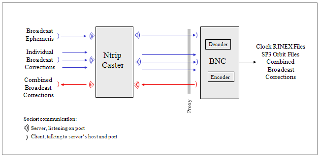
Figure 4: Flowchart, BNC combining Broadcast Correction streams.
Although BNC is mainly a real-time tool to be operated online, it can be run offline
Unless it runs offline, BNC
The main window of BNC shows a 'Top menu bar' section, a 'Settings' sections with tabs to set processing options, a 'Streams' section, a section for 'Log' tabs, and a 'Bottom menu bar' section, see figure below.
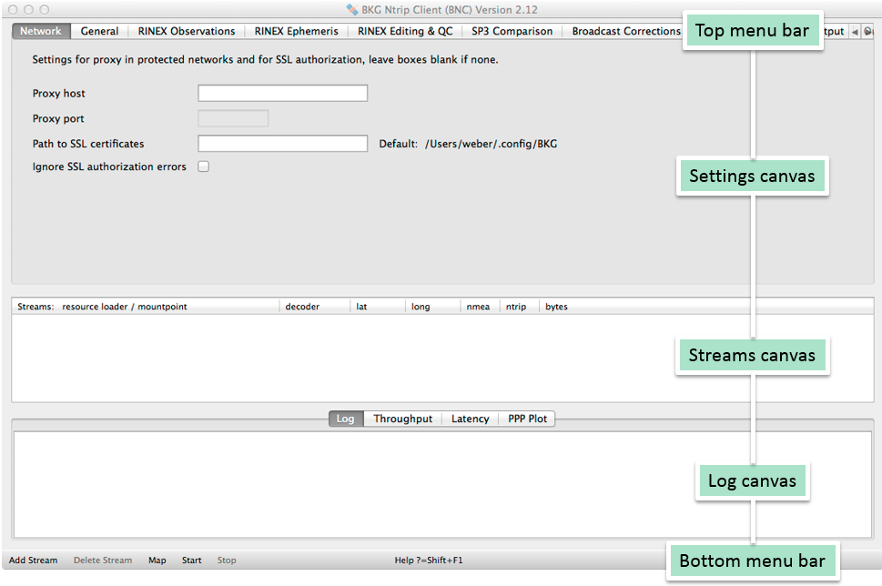
Figure 5: Sections on BNC's main window.
Running BNC in interactive mode requires graphics support. This is also required in batch mode when producing plots. Windows and Mac OS X systems always support graphics. However, when using BNC in batch mode on Linux systems for producing plots, you need to make sure that at least a virtual X-Server like 'Xvfb' is installed and the '-display' command-line option is used.
The usual handling of BNC is that you first select a number of streams ('Add Stream'). Any stream configured to BNC shows up on the 'Streams' canvas in the middle of BNC's main window. You then go through BNC's various configuration tabs to select a combination of input, processing and output options before you start the program ('Start'). Most configuration tabs are dedicated to a certain functionality of BNC. If the first option field on such a configuration tab is empty, the affected functionality is - apart from a few exceptions - deactivated.
Records of BNC's activities are shown in the 'Log' tab. The bandwidth consumption per stream, the latency of incoming observations and a PPP time series for coordinates are shown in the 'Throughput', 'Latency' and 'PPP Plot' tabs of the main window.As a default, configuration files for running BNC on Unix/Linux/Mac OS X systems are saved in directory '${HOME}/.config/BKG'. On Windows systems, they are typically saved in directory 'C:/Documents and Settings/Username/.config/BKG'. The default configuration file name is 'BNC.bnc'.
The default file name 'BNC.bnc' can be changed and the file contents can easily be edited. On graphical user interfaces it is possible to Drag & Drop a configuration file icon to start BNC (not on Mac OS X systems). Some configuration options can be changed on-the-fly. See annexed 'Configuration Examples' for a complete set of configuration options. It is also possible to start and configure BNC via command line.
BNC maintains configuration options at three different levels:
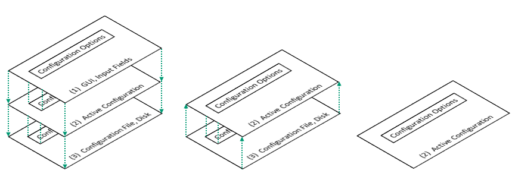
Figure 6: Management of configuration options in BNC:
Left: BNC in graphics mode where active configuration options are introduced through
GUI input fields and finally saved on disk.
Middle: BNC in 'no window' mode where active configuration options are read from disk.
Right: BNC in 'no window' mode without configuration file where default configuration
options can be replaced via command line options.
Configuration options are usually specified using GUI input fields (1) after launching BNC. When hitting the 'Start' button, configuration options are transferred one level down to become BNC's active configuration (2) allowing the program to begin its operation. Pushing the 'Stop' button ends data processing so that the user can finally terminate BNC through 'File'->'Quit'->'Save Options' which saves processing options in a configuration file to disk (3). It is important to understand that:
This chapter describes how to set the BNC program options. It explains the 'Top Menu Bar', the 'Settings Canvas' with the processing options, the 'Streams Canvas' and 'Log Canvas', and the 'Bottom Menu Bar'.
Top Menu Bar
3.1. Top Menu Bar
3.1.1 File
3.1.2 Help
Settings Canvas
3.2. Network
3.2.1 Proxy
3.2.2 SSL
3.3. General
3.3.1. Logfile
3.3.2. Append Files
3.3.3. Reread Configuration
3.3.4. Auto Start
3.3.5. Raw Output File
3.4. RINEX Observations
3.4.1. File Names
3.4.2. Directory
3.4.3. File Interval
3.4.4. Sampling
3.4.5. Skeleton Extension
3.4.6. Skeleton Mandatory
3.4.7. Script
3.4.8. Version 2
3.4.9. Version 3
3.5. RINEX Ephemeris
3.5.1. Directory
3.5.2. Interval
3.5.3. Port
3.5.4. Version
3.6. RINEX Editing & QC
3.6.1 Action
3.6.2 Sky Plots
3.6.3 Set Edit Options
3.6.4 Input Files
3.6.5 Output Files
3.6.6 Directory for Plots
3.6.7 Command Line, No Window
3.7. SP3 Comparison
3.7.1 Input SP3 Files
3.7.2 Exclude Satellites
3.7.3 Logfile
3.8. Broadcast Corrections
3.8.1. Directory, ASCII
3.8.2. Interval
3.8.3. Port
3.8.4. Wait for Full Corr Epoch
3.9. Feed Engine
3.9.1. Port
3.9.2. Wait for Full Obs Epoch
3.9.3. Sampling
3.9.4. File
3.9.5. Port (unsynchronized)
3.10. Serial Output
3.10.1. Mountpoint
3.10.2. Port Name
3.10.3. Baud Rate
3.10.4. Flow Control
3.10.5. Parity
3.10.6. Data Bits
3.10.7. Stop Bits
3.10.8. NMEA
3.10.9. File
3.10.10. Height
3.11. Outages
3.11.1. Observation Rate
3.11.2. Failure Threshold
3.11.3. Recovery Threshold
3.11.4. Script
3.12. Miscellaneous
3.12.1. Mountpoint
3.12.2. Log Latency
3.12.3. Scan RTCM
3.12.4. Port
3.13. PPP Client
3.13.1 Mode & Mountpoints
3.13.1.1 Mode
3.13.1.2 Obs Mountpoint
3.13.1.3 Corr Mountpoint
3.13.2 Marker Coordinates
3.13.3 Antenna Eccentricity
3.13.4 NMEA & Plot Output
3.13.4.1 NMEA File
3.13.4.2 NMEA Port
3.13.5 Post Processing
3.13.6 Antennas
3.13.6.1 ANTEX File
3.13.6.2 Antenna Name
3.13.7 Basics
3.13.7.1 Use Phase Obs
3.13.7.2 Estimate Tropo
3.13.7.3 Use GLONASS
3.13.7.4 Use Galileo
3.13.7.5 Sync Corr
3.13.7.6 Averaging
3.13.7.7 Quick-Start
3.13.7.8 Maximal Solution Gap
3.13.7.9 Audio Response
3.13.8 Sigmas
3.13.8.1 Code
3.13.8.2 Phase
3.13.8.3 XYZ Init
3.13.8.4 XYZ White Noise
3.13.8.5 Tropo Init
3.13.8.6 Tropo White Noise
3.13.9 PPP Plot
3.13.10 Track Plot
3.13.10.1 Open Map
3.13.10.2 Google/OSM
3.13.10.3 Dot Size
3.13.10.4 Dot Color
3.13.10.5 Speed
3.14. Combine Corrections
3.14.1 Combine Corrections Table
3.14.1.1 Add Row, Delete
3.14.1.2 Method
3.14.1.3 Maximal Residuum
3.14.1.4 Sampling
3.15. Upload Corrections
3.15.1 Add, Delete Row
3.15.2 Host, Port, Mountpoint, Password
3.15.3 System
3.15.4 Center of Mass
3.15.5 SP3 File
3.15.6 RNX File
3.15.7 Interval
3.15.8 Sampling
3.15.8.1 orbits
3.15.8.2 SP3
3.15.8.3 RINEX
3.15.9 Custom Trafo
3.16. Upload Ephemeris
3.16.1 Host & Port
3.16.2 Mountpoint & Password
3.16.3 Sampling
Streams Canvas
3.17. Streams
3.17.1 Edit Streams
3.17.2 Delete Stream
3.17.3 Reconfigure Stream Selection On-the-fly
Logging Canvas
3.18. Logging
3.18.1 Log
3.18.2 Throughput
3.18.3 Latency
3.18.4 PPP Plot
Bottom Menu Bar
3.19. Bottom Menu Bar
3.19.1. Add Stream
3.19.1.1 Add Stream - Coming from Caster
3.19.1.1.1 Caster Host and Port
3.19.1.1.2 Casters Table
3.19.1.1.3 User and Password
3.19.1.1.4 Get Table
3.19.1.1.5 NTRIP Version
3.19.1.1.6 Map
3.19.1.2 Add Stream - Coming from TCP/IP Port
3.19.1.3 Add Stream - Coming from UDP Port
3.19.1.4 Add Stream - Coming from Serial Port
3.19.2. Delete Stream
3.19.3. Map
3.19.4 Start
3.19.5 Stop
Command Line
3.20. Command Line Options
3.20.1. No Window Mode
3.20.2. File Mode
3.20.3. Configuration File
3.20.4. Configuration Options
The top menu bar allows selecting a font for the BNC windows, save configured options, or quit the program execution. It also provides access to program documentation.
The 'File' button lets you
The 'Help' button provides access to
BNC comes with a help system providing online information about its functionality and usage. Short descriptions are available for any widget. Focus to the relevant widget and press Shift+F1 to request help information. A help text appears immediately; it disappears as soon as the user does something else. The dialogs on some operating systems may provide a "?" button that users can click; click the relevant widget to pop up the help text.
You may need to specify a proxy when running BNC in a protected network. You may also like to use the Transport Layer Security (TLS) and its predecessor, Secure Sockets Layer (SSL) cryptographic protocols for secure NTRIP communication over the Internet.
3.2.1 Proxy - Usage in a protected LAN
If you are running BNC within a protected Local Area Network (LAN), you might need to use a proxy server to access the Internet. Enter your proxy server IP and port number in case one is operated in front of BNC. If you don't know the IP and port of your proxy server, check the proxy server settings in your Internet browser or ask your network administrator.
Note that IP streaming is often not allowed in a LAN. In this case you need to ask your network administrator for an appropriate modification of the local security policy or for the installation of a TCP relay to the NTRIP Broadcasters. If these are not possible, you might need to run BNC outside your LAN on a host that has unobstructed connection to the Internet.
3.2.2 SSL - Transport Layer Security
Communication with an NTRIP Broadcaster over SSL requires the exchange of client and/or server certificates. Specify the path to a directory where you save certificates on your system. You may like to check out http://software.rtcm-ntrip.org/wiki/Certificates for a list of known NTRIP Server certificates. You may also just try communication via SSL to check out whether this is supported by the involved NTRIP Broadcaster.
SSL communication may involve queries coming from the NTRIP Broadcaster. Tick 'Ignore SSL authorization errors' if you don't want to be bothered with this. Note that SSL communication is usually done over port 443.
The following defines general settings for BNC's logfile, file handling, reconfiguration on-the-fly, and auto-start.
Records of BNC's activities are shown in the 'Log' tab on the bottom of the main window. These logs can be saved into a file when a valid path is specified in the 'Logfile (full path)' field. The logfile name will automatically be extended by a string '_YYMMDD' carrying the current date. This leads to series of daily logfiles when running BNC continuously for extended. Message logs cover the communication status between BNC and the NTRIP Broadcaster as well as problems that may occur in the communication link, stream availability, stream delay, stream conversion etc. All times are given in UTC. The default value for 'Logfile (full path)' is an empty option field, meaning that BNC logs will not be saved into a file.
When BNC is started, new files are created by default and any existing files with the same name will be overwritten. However, users might want to append existing files following a restart of BNC, a system crash or when BNC crashed. Tick 'Append files' to continue with existing files and keep what has been recorded so far. Note that option 'Append files' affects all types of files created by BNC.
3.3.3 Reread Configuration - optional
When operating BNC online in 'no window' mode (command line option -nw), some configuration options can nevertheless be changed on-the-fly without interrupting the running process. For that you force the program to reread parts of its configuration in pre-defined intervals from the disk. Select '1 min', '1 hour', or '1 day' to let BNC reread on-the-fly changeable configuration options every full minute, hour, or day. This lets in between edited options become effective without interrupting uninvolved threads. See annexed section 'Configuration Examples' for a configuration file example and a list of on-the-fly changeable options.
You may like to auto-start BNC at startup time in window mode with pre-assigned configuration options. This may be required i.e. immediately after booting your system. Tick 'Auto start' to supersede the usage of the 'Start' button. Make sure that you maintain a link to BNC for that in your Autostart directory (Windows systems) or call BNC in a script below directory /etc/init.d (Unix/Linux/Mac OS X systems).
See BNC's command line option -nw for an auto-start of BNC in 'no window' mode.
3.3.5 Raw Output File - optional
BNC can save all data coming in through various streams in one daily file. The information is recorded in the specified 'Raw output file' in the received order and format. This feature allows a BNC user to run the PPP option offline with observations, Broadcast Corrections, and Broadcast Ephemeris being read from a previously saved file. It supports the offline repetition of a real-time situation for debugging purposes and it is not meant for Post Processing.
Data will be saved in blocks in the received format separated by ASCII time stamps like (example):
2010-08-03T18:05:28 RTCM3EPH RTCM_3 67
This example block header tells you that 67 bytes were saved in the data block following this time stamp. The information in this block is encoded in RTCM Version 3 format, comes from mountpoint RTCM3EPH and was received at 18:05:29 UTC on 2010-08-03. BNC adds its own time stamps in order to allow the reconstruction of a recorded real-time situation.
The default value for 'Raw output file' is an empty option field, meaning that BNC will not save all raw data into one single daily file.
Observations will be converted to RINEX if they come in either RTCM Version 2 or RTCM Version 3 format. Depending on the RINEX version and incoming RTCM message types, files generated by BNC may contain data from GPS, GLONASS, Galileo, SBAS, QZSS and/or BDS(BeiDou). In case an observation type is listed in the RINEX header but the corresponding observation is unavailable, its value is set to zero '0.000'. Note that the 'RINEX TYPE' field in the RINEX Version 3 Observation file header is always set to 'M(MIXED)' or 'Mixed' even if the file only contains data from one system.
It is important to understand that converting RTCM streams to RINEX files requires a-priori information on observation types for specifying a complete RINEX header. Regarding the RINEX Version 2 file header, BNC simply introduces all observation types defined in the Version 2 standard and later reports "0.000" for all observations which are not received. However, following this approach is not possible for RINEX Version 3 files from RTCM Version 3 MSM streams because of the huge number of observation types which might in principle show up. The solution implemented in BNC is to start with RINEX Version 3 observation type records from skeleton files (see section 'Skeleton Extension' and 'Skeleton Mandatory') and switch to a default selection of observation types when such skeleton file is not available or does not contain the required information. The following is a default selection of observation types specified for a RINEX Version 3 file:
C 9 C2I L2I S2I C6I L6I S6I C7I L7I S7I SYS / # / OBS TYPES
E 12 C1X L1X SX1 C5X L5X SX5 C7X L7X SX7 C8X L8X SX8 SYS / # / OBS TYPES
G 15 C1C L1C S1C C1W L1W S1W C2X L2X S2X C2W L2W S2W C5X SYS / # / OBS TYPES
L5X S5X SYS / # / OBS TYPES
J 15 C1C L1C S1C C1W L1W S1W C2X L2X S2X C2W L2W S2W C5X SYS / # / OBS TYPES
L5X S5X SYS / # / OBS TYPES
R 6 C1C L1C S1C C2P L2P S2P SYS / # / OBS TYPES
S 9 C1C L1C S1C C5I L5I S5I C5Q L5Q S5Q SYS / # / OBS TYPES
Please note that RTCM Version 3 messages 1084 for GLONASS observations don't contain the channel numbers. However, these messages can only be converted to RINEX when you add messages which include the channel numbers. This could be done though an additional stream carrying 1087 GLONASS observation messages or an additional stream carrying 1020 GLONASS ephemeris messages. You could also consider setting up a streams which contains both, the 1084 and the 1020 messages.
The screenshot below shows an example setup of BNC when converting streams to RINEX. Streams are coming from various NTRIP Broadcasters as well as from a serial communication link. Specifying a decoder string 'ZERO' means to not convert the affected stream but save its contents as received.
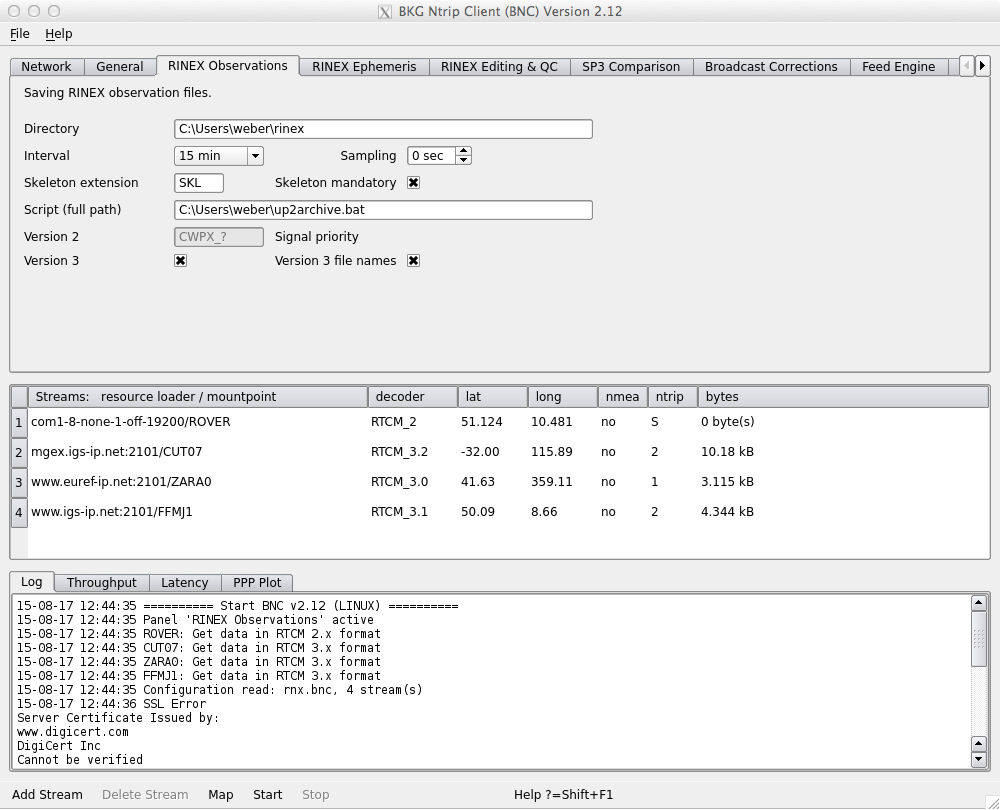
Figure 7: BNC translating incoming streams to 15 min RINEX Version 3 files.
RINEX file names in BNC follow the convention of RINEX Version 2.11. So far BNC does not support extended file names as defined in RINEX Version 3.02. File names are derived by BNC from the first 4 characters of the corresponding stream's mountpoint (4Char Station ID). For example, data from mountpoints FRANKFURT and WETTZELL will have hourly RINEX Observation files named
FRAN{ddd}{h}.{yy}O
WETT{ddd}{h}.{yy}O
where 'ddd' is the day of year, 'h' is a letter which corresponds to an hour long UTC time block and 'yy' is the year.
If there is more than one stream with identical 4Char Station ID (same first 4 characters for their mountpoints), the mountpoint strings are split into two sub-strings and both become part of the RINEX file name. For example, when simultaneously retrieving data from mountpoints FRANKFURT and FRANCE, their hourly RINEX Observation files are named as
FRAN{ddd}{h}_KFURT.{yy}O
FRAN{ddd}{h}_CE.{yy}O.
If several streams show exactly the same mountpoint name (example: BRUS0 from www.euref-ip.net and BRUS0 from www.igs-ip.net), BNC adds an integer number to the file name leading i.e. to hourly RINEX Observation files like
BRUS{ddd}{h}_0.{yy}O
BRUS{ddd}{h}_1.{yy}O.
Note that RINEX file names for all intervals less than 1 hour follow the file name convention for 15 minutes RINEX Observation files i.e.
FRAN{ddd}{h}{mm}.{yy}O
where 'mm' is the starting minute within the hour.
Here you can specify the path to where the RINEX Observation files will be stored. If the specified directory does not exist, BNC will not create RINEX Observation files. Default value for 'Directory' is an empty option field, meaning that no RINEX Observation files will be written.
3.4.3 File Interval - mandatory if 'Directory' is set
Select the length of the RINEX Observation file generated. The default value is 15 minutes.
3.4.4 Sampling - mandatory if 'Directory' is set
Select the RINEX Observation sampling interval in seconds. A value of zero '0' tells BNC to store all received epochs into RINEX. This is the default value.
3.4.5 Skeleton Extension - optional
Whenever BNC starts generating RINEX Observation files (and then once every day at midnight), it first tries to retrieve information needed for RINEX headers from so-called public RINEX header skeleton files which are derived from sitelogs. A HTTP or HTTPS link to a directory containing these skeleton files may be available through data field number 7 of the affected NET record in the source-table. See http://www.epncb.oma.be:80/stations/log/skl/brus.skl for an example of a public RINEX header skeleton file for the Brussels EPN station.
However, sometimes public RINEX header skeleton files are not available, their contents is not up to date, or you need to put additional/optional records in the RINEX header. For that BNC allows using personal skeleton files that contain the header records you would like to include. You can derive a personal RINEX header skeleton file from the information given in an up to date sitelog. A file in the RINEX Observations 'Directory' with a 'Skeleton extension' suffix is interpreted by BNC as a personal RINEX header skeleton file for the corresponding stream.
Examples for personal skeleton file name convention: RINEX Observation files for mountpoints WETTZELL, FRANKFURT and FRANCE (same 4Char Station ID), BRUS0 from www.euref-ip.net and BRUS0 from www.igs-ip.net (same 4Char Station ID, identical mountpoint stings) would accept personal skeleton files named
WETT.skl
FRAN_KFURT.skl
FRAN_CE.skl
BRUS_0.skl
BRUS_1.skl
if 'Skeleton extension' is set to 'skl'.
Note the following regulations regarding personal RINEX header skeleton files:
If neither a public nor a personal RINEX header skeleton file is available for BNC, a default header will be used.
The following is a skeleton example for a RINEX file:
OBSERVATION DATA M (MIXED) RINEX VERSION / TYPE
CUT0 MARKER NAME
59945M001 MARKER NUMBER
5023K67889 TRIMBLE NETR9 5.01 REC # / TYPE / VERS
4928353386 TRM59800.00 SCIS ANT # / TYPE
-2364337.2699 4870285.5624 -3360809.8398 APPROX POSITION XYZ
0.0000 0.0000 0.0000 ANTENNA: DELTA H/E/N
gnss@curtin.edu.au CUT OBSERVER / AGENCY
C 10 C1I L1I D1I S1I C6I L6I S6I C7I L7I S7I SYS / # / OBS TYPES
E 13 C1X L1X D1X S1X C5X L5X S5X C7X L7X S7X C8X L8X S8X SYS / # / OBS TYPES
G 13 C1C L1C D1C S1C C2W L2W S2W C2X L2X S2X C5X L5X S5X SYS / # / OBS TYPES
J 19 C1C L1C D1C S1C C1X L1X S1X C1Z L1Z S1Z C2X L2X S2X SYS / # / OBS TYPES
C5X L5X S5X C6L L6L S6L SYS / # / OBS TYPES
R 13 C1C L1C D1C S1C C1P L1P S1P C2C L2C S2C C2P L2P S2P SYS / # / OBS TYPES
S 7 C1C L1C D1C S1C C5I L5I S5I SYS / # / OBS TYPES
PORTIONS OF THIS HEADER GENERATED BY THE IGS CB FROM COMMENT
SITELOG cut0_20150507.log COMMENT
END OF HEADER
3.4.6 Skeleton Mandatory - optional
Tick check box 'Skeleton mandatory' in case you want that RINEX files are only produced if skeleton files are available for BNC. If no skeleton file is available for a particular source then no RINEX observation file will be produced from the affected stream.
Note that a skeleton file contains RINEX header information such as receiver and antenna types. In case of stream conversion to RINEX Version 3 a skeleton file should also contain information on potentially available observation types. A missing skeleton file will therefore enforce BNC to only save a default set of RINEX 3 observation types.
Whenever a RINEX Observation file is saved, you might want to compress, copy or upload it immediately via FTP. BNC allows you to execute a script/batch file to carry out these operations. To do that, specify the full path of the script/batch file here. BNC will pass the RINEX Observation file path to the script as a command line parameter (%1 on Windows systems, $1 on Unix/Linux/Mac OS X systems).
The triggering event for calling the script or batch file is the end of a RINEX Observation file 'Interval'. If that is overridden by a stream outage, the triggering event is the stream reconnection.
As an alternative to initiating file uploads through BNC, you may like to call an upload script or batch file through your crontable or Task Scheduler (independent from BNC) once every one or two minutes after the end of each RINEX file 'Interval'.
GNSS observation data are generally hold available within BNC according to attributes as defined in RINEX Version 3. These attributes describe the tracking mode or channel when generating the observation signals. Capital letters specifying signal generation attributes are A, B, C, D, I, L, M, N, P, Q, S, W, X, Y, and Z, see RINEX Version 3 documentation. Although RINEX Version 3 with its signal generation attributes is the internal default processing format for BNC, there are two applications where the program is required to produce data in RINEX Version 2 format:
The default 'Signal priority' list is an empty option string meaning a priority sequence of 'CWPX_?' attributes when mapping RINEX 3 to RINEX 2. The meaning of this sequence of characters - take it as an example - is as follows:
You may like to specify you own 'Signal priority' string for producing RINEX Version 2 files. If you neither convert observation streams to RINEX Version 2 nor concatenate RINEX Version 3 to Version 2 files then the 'Version 2' option is meaningless.
The default format for RINEX Observation files is RINEX Version 2.11. Select RINEX 'Version 3' if you would like to save RTCM Version 3 observation streams in RINEX Version 3 format.
Note that it is possible to force a RTCM Version 2 stream to be saved in RINEX Version 3 file format. However, this is not recommended because such stream can not be precisely mapped to RINEX Version 3 as the required information on tracking modes (observation attributes) is no part of RTCM Version 2.
Broadcast Ephemeris can be saved as RINEX Navigation files when received via RTCM Version 3 e.g. as message types 1019 (GPS) or 1020 (GLONASS) or 1044 (QZSS) or 1043 (SBAS) or 1045 and 1046 (Galileo) or 63 (tentative, BDS/BeiDou). The file name convention follows the details given in section 'RINEX File Names' except that the first four characters are 'BRDC' and the last character is
Note that streams dedicated to carry Broadcast Ephemeris messages in RTCM Version 3 format in high repetition rates are listed on http://igs.bkg.bund.de/ntrip/ephemeris.
Specify a path for saving Broadcast Ephemeris data as RINEX Navigation files. If the specified directory does not exist, BNC will not create RINEX Navigation files. Default value for Ephemeris 'Directory' is an empty option field, meaning that no RINEX Navigation files will be created.
3.5.2 Interval - mandatory if 'Directory' is set
Select the length of the RINEX Navigation file generated. The default value is 1 day.
BNC can output Broadcast Ephemeris in RINEX Version 3 format on your local host (IP 127.0.0.1) through an IP 'Port'. Specify an IP port number to activate this function. The default is an empty option field, meaning that no ASCII ephemeris output via IP port is generated.
The source code for BNC comes with an example perl script 'test_tcpip_client.pl' that allows you to read BNC's ASCII ephemeris output from the IP port.
Default format for RINEX Navigation files containing Broadcast Ephemeris is RINEX Version 2.11. Select 'Version 3' if you want to save the ephemeris in RINEX Version 3 format.
Note that this does not concern the Broadcast Ephemeris output through IP port which is always in RINEX Version 3 format.
Besides stream conversion from RTCM to RINEX, BNC allows editing RINEX files or concatenate their contents. RINEX Observation and Navigation files can be handled. BNC can also carry out a RINEX file quality check. In summary this functionality in BNC covers
Select an action. Options are 'Edit/Concatenate' and 'Analyze'.
3.6.2 Sky Plots - mandatory if 'Action' is set to 'Analyze'
Once the 'Analyze' action is selected, you have to specify the GNSS system(s) whose observations you want to analyze for multipath and signal-to-noise ratio sky plots. Possible options are 'ALL', 'GPS', 'GLONASS', 'Galileo', 'SBAS', 'QZSS' and 'BDS'. Default is 'ALL', meaning that observations from all GNSS will be analyzed.
3.6.3 Set Edit Options - mandatory if 'Edit/Concatenate' is set
Once the 'Edit/Concatenate' action is selected, you have to 'Set Edit Options'. BNC lets you specify the RINEX version, sampling interval, begin and end of file, operator, observation codes, comment lines, and marker, antenna, receiver details. Note that some specification are only meaningful for RINEX Observation files but not for RINEX Navigation files.
When converting RINEX Version 2 to RINEX Version 3 Observation files, the tracking mode or channel information in the (last character out of the three characters) observation code is left blank if unknown. When converting RINEX Version 3 to RINEX Version 2 Observation files:
Optionally you may specify a 'RUN BY' string to be included in the emerging new RINEX file header. Default is an empty option field, meaning the operator's ID is automatically used as 'RUN BY' string.
Specifying comment line text to be added to the emerging new RINEX file header is another option. Any introduction of a newline through '\n' in this enforces the beginning of a further comment line. Comment line(s) will be added to the header immediately after the 'PGM / RUN BY / DATE' record. Default is an empty option field, meaning that no additional comment line will be added to the RINEX header.
You can specify a list of observation codes in field 'Use Obs. Types' to limit the output file contents to specific observation codes. GNSS system characters in that list are followed by a colon and a two or three characters observation code. A two characters observation code would mean that all available tracking modes of the affected observation type and frequency will be accepted as part of the RINEX output file. Observation codes are separated by a blank character. Default is an empty option field, meaning that any input observation code will become part of the RINEX output file.
If you specify a 'New' but no 'Old' marker/antenna/receiver name, the corresponding data field in the emerging new RINEX Observation file will be filled accordingly. If you in addition specify an 'Old' marker/antenna/receiver name, the corresponding data field in the emerging new RINEX Observation file will only be filled accordingly where 'Old' specifications match existing file contents.
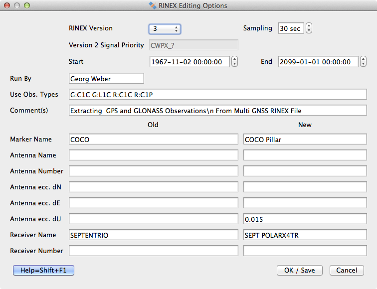
Figure 8: Example for 'RINEX Editing Options' window.
3.6.4 Input Files - mandatory if 'Action' is set
Specify full path to input RINEX Observation file(s), and
specify full path to input RINEX Navigation file(s).
When specifying several input files BNC will concatenate their contents. In case of RINEX Observation input files with different observation type header records, BNC will output only one specific set of adjustet observation type records in the RINEX header which fits to the whole file contents.
Note that you may specify several RINEX Version 2 Navigation files for GPS and GLONASS.
3.6.5 Output Files - mandatory if 'Action' is set
If 'Edit/Concatenate' is selected, specifying the a path to output RINEX Observation file(s) and specifying a full path to output RINEX Navigation file(s) is mandatory.
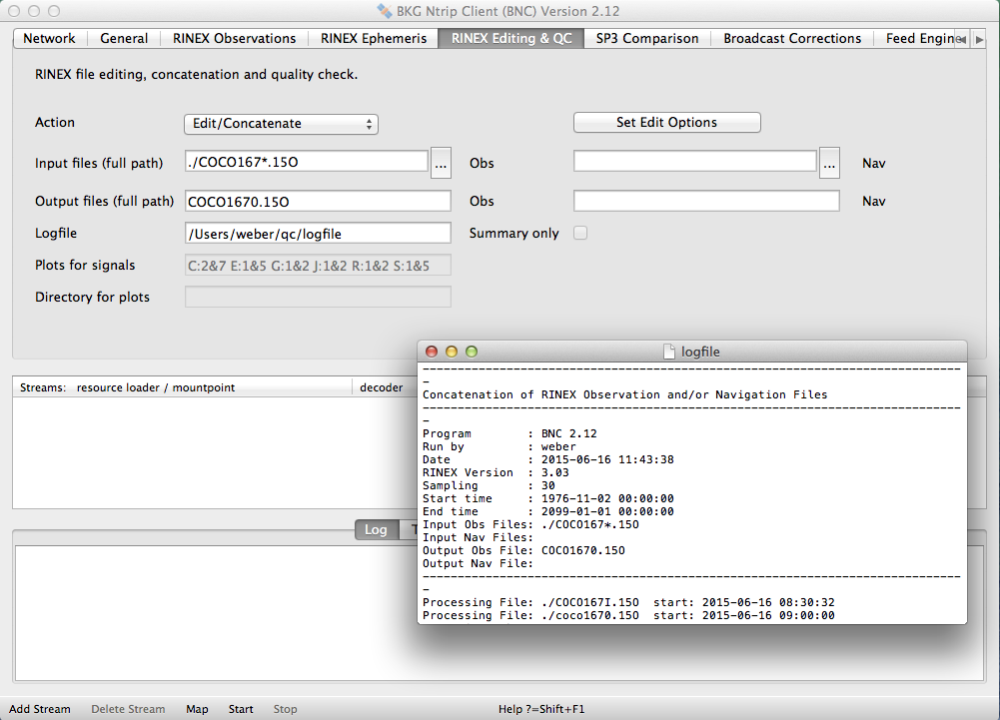
Figure 9: Example for RINEX file editing with BNC in Post Processing mode.
If 'Analyze' is selected, specifying a 'Log' file to output analysis results is mandatory. The following is a RINEX quality check analysis logfile example:
Analyze File ------------ File: cut02530.12o Marker name: CUT0 Receiver: TRIMBLE NETR9 Antenna: TRM59800.00 SCIS Start time: 2012-09-09 00:00:00.000 End time: 2012-09-09 23:59:30.000 Interval: 30 # Sat.: 56 # Obs.: 54159 # Slips (file): 295 # Slips (found): 52 Mean MP1: 0.25382 Mean MP2: 0.163092 Mean SNR1: 4.83739 Mean SNR2: 5.09455
In this logfile '# Slips (file)' stands for the number of cycle slips reported in the RINEX Observation file while '# Slips (found)' stands for additional cycle slips identified by BNC.
3.6.6 Directory for Plots - optional if 'Action' is set
If 'Analyze' is selected, specifying the path to a directory where plot files will be saved is optional. File names will be composed from the RINEX input file name(s) plus suffix 'PNG' to indicate the plot file format in use.

Figure 10: Example for creating RINEX quality check graphics output with BNC.

Figure 11: Example for satellite availability, elevation and PDOP plots as a result of a RINEX quality check with BNC.

Figure 12: Sky plot examples for multipath.
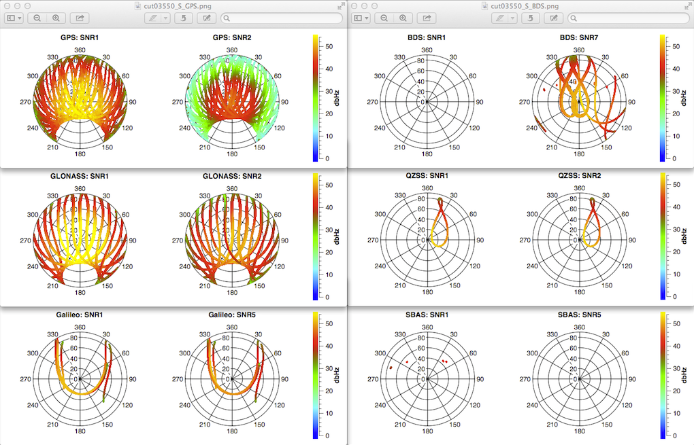
Figure 13: Sky plot examples for signal-to-noise ratio.
3.6.7 Command Line, No Window - optional
BNC applies options from the configuration file but allows updating every one of them on the command line while the contents of the configuration file remains unchanged, see section on 'Command Line Options'. The syntax for that looks as follows
--key <keyName> <keyValue>
where <keyName> stands for the name of an option contained in the configuration file and <keyValue> stands for the value you want to assign to it. This functionality may be helpful in the 'RINEX Editing & QC' context when running BNC on a routine basis for maintaining a RINEX file archive.
The following example for a Linux platform calls BNC in 'no window' mode with a local configuration file 'rnx.conf' for concatenating four 15min RINEX files from station TLSE residing in the local directory to produce an hourly RINEX Version 3 file with 30 seconds sampling interval:./bnc --nw --conf rnx.conf --key reqcAction Edit/Concatenate --key reqcObsFile "tlse119b00.12o,tlse119b15.12o,tlse119b30.12o,tlse119b45.12o" --key reqcOutObsFile tlse119b.12o --key reqcRnxVersion 3 --key reqcSampling 30
You may use asterisk '*' and/or question mark '?' wildcard characters as shown with the following globbing command line option to specify a selection of files in a local directory:
--key reqcObsFile "tlse*"
or:
--key reqcObsFile tlse\*
The following Linux command line produces RINEX QC plots (see Estey and Meertens 1999) offline in 'no window' mode and saves them in directory '/home/user'. Introducing a dummy configuration file /dev/null makes sure that no configuration options previously saved on disc are used:
/home/user/bnc --conf /dev/null --key reqcAction Analyze --key reqcObsFile CUT02070.12O --key reqcNavFile BRDC2070.12P --key reqcOutLogFile CUT0.txt --key reqcPlotDir /home/user --nw
The following Linux command line produces the same RINEX QC plots in interactive autoStart mode:
/home/user/bnc --conf /dev/null --key reqcAction Analyze --key reqcObsFile CUT02070.12O --key reqcNavFile BRDC2070.12P --key reqcOutLogFile CUT0.txt --key --key startTab 4 --key autoStart 2
The following is a list of available key names for 'RINEX Editing & QC' (short: REQC, pronounced 'rek') options and their meaning, cf. section 'Configuration Examples':
| Keyname | Meaning |
| reqcAction | RINEX Editing & QC action |
| reqcObsFile | RINEX Observation input file(s) |
| reqcNavFile | RINEX Navigation input files(s) |
| reqcOutObsFile | RINEX Observation output file |
| reqcPlotDir | RINEX QC plot directory |
| reqcOutNavFile | RINEX Navigation output file |
| reqcOutLogFile | Logfile |
| reqcPlotDir | Plot file directory |
| reqcSkyPlotSystem | GNSS system specification |
| reqcRnxVersion | RINEX version of emerging new file |
| reqcSampling | Sampling interval of emerging new RINEX file |
| reqcStartDateTime | Begin of emerging new RINEX file |
| reqcEndDateTime | End of emerging new RINEX file |
| reqcRunBy | Operator name |
| reqcComment | Additional comment lines |
| reqcOldMarkerName | Old marker name |
| reqcNewMarkerName | New marker name |
| reqcOldAntennaName | Old antenna name |
| reqcNewAntennaName | New antenna name |
| reqcOldReceiverName | Old receiver name |
| reqcNewReceiverName | New receiver name |
BNC allows to compare the contents of two files containing GNSS orbit and clock data in SP3 format. SP3 ASCII files basically contain a list of records over a certain period of time. Each record carries a time tag, the X,Y,Z position of the satellite's Center of Mass at that time and the corresponding satellite clock value. Both SP3 files may contain some records for different epochs. If so then BNC only compares records for identical epochs. BNC accepts that a specific GNSS system or a specific satellite is only available in one of the SP3 files. Note that BNC does not interpolate orbits when comparing SP3 files.
To compare satellite clocks provided by the two files BNC first converts coordinate differences dX,dY,dZ into along track, out-of-plane and radial compoments. It then corrects the clock differences for the radial components of the coordinate differences. RMS values of clock differences are finally calculated after introducing at first one offset 'per epoch for all satellites' plus a second offset 'per satellite for all epochs'.
3.7.1 Input SP3 Files - optional
Specify the full path of two SP3 files separated by a comma.
3.7.2 Exclude Satellites - optional if 'Input SP3 Files' is set
You may want to exclude one or more satellites in your SP3 files from the comparison. Or you may like to exclude all satellites of a specific GNSS system from the comparison. The following are example strings to be entered for excluding satellites from the comparison.
Default is an empty option field, meaning that no satellite will be excluded from the comparison.
3.7.3 Logfile - mandatory if 'Input SP3 Files' is set
Specify a logfile name to save results of the SP3 file comparison.
Below you find an example for a SP3 Comparsion logfile. In its firt part it uses the following abbreviations:
| 'MJD' | Modified Julian Date |
| 'PRN' | Satellit specification |
| 'radial' | Radial component of orbit coordinate difference [m] |
| 'along' | Along track component of orbit coordinate difference [m] |
| 'out' | Out-of-plane component of orbit coordinate difference [m] |
| 'clk' | Clock difference [m] |
| 'clkRed' | Clock difference reduced by radial component of orbit coordinate difference [m] |
| 'iPRN' | BNC internal sequence number |
The second part following string 'RMS' provides a summary of the comparison using the following abbreviations:
| 'PRN' | Satellite specification |
| 'radial' | RMS of radial component of orbit coordinate differences [m] |
| 'along' | RMS of along track component of orbit coordinate differences [m] |
| 'out' | RMS of out-of-plane component of orbit coordinate differences [m] |
| 'nOrb' | Number of epochs used in in orbit comparision |
| 'clk' | RMS of clock differences [m] |
| 'clkRed' | RMS of clock differences after reduction of radial orbit differences [m] |
| 'nClk' | Number of epochs use in clock comparisons |
| 'Offset' | Clock offset [m] |
! SP3 File 1: esr18283.sp3 ! SP3 File 2: rt218283.sp3 ! ! MJD PRN radial along out clk clkRed iPRN ! ---------------------------------------------------------------- 57043.000000 G01 -0.0001 -0.0318 -0.0354 0.0266 0.0267 1 57043.000000 G02 -0.0062 -0.0198 0.0111 0.0082 0.0143 2 57043.000000 G03 0.0052 0.0060 0.0032 0.0386 0.0334 3 57043.000000 G04 -0.0049 -0.0193 -0.0071 -0.1696 -0.1648 4 57043.000000 G05 0.0027 0.0154 0.0275 0.0345 0.0318 5 57043.000000 G06 0.0247 -0.0398 -0.0111 0.0483 0.0236 6 57043.000000 G07 -0.0052 0.2854 -0.0975 -0.0940 -0.0888 7 57043.000000 G08 -0.0247 0.0937 -0.0184 -0.1563 -0.1316 8 57043.000000 G09 0.0152 0.0583 0.0086 -0.0144 -0.0296 9 ... ... ... ! ! RMS[m] ! ! PRN radial along out nOrb clk clkRed nClk Offset ! --------------------------------------------------------------------- ! G01 0.0151 0.0377 0.0196 96 0.0157 0.0154 96 0.0152 ! G02 0.0083 0.0278 0.0228 96 0.0097 0.0124 96 -0.0626 ! G03 0.0105 0.0311 0.0307 96 0.0352 0.0309 96 0.0898 ! G04 0.0113 0.0334 0.0154 94 0.0725 0.0707 94 -0.5087 ! G05 0.0103 0.0319 0.0299 96 0.0417 0.0403 96 0.1185 ! G06 0.0182 0.0509 0.0302 96 0.0218 0.0166 96 0.0040 ! G07 0.0337 0.1632 0.0463 96 0.0483 0.0435 96 0.3031 ! G08 0.0228 0.0741 0.0321 88 0.0616 0.0561 88 -0.2232 ... ... ... ! R20 0.0637 0.2115 0.1131 96 0.1580 0.1345 96 0.7371 ! R21 0.0475 0.1657 0.0880 96 0.1123 0.0840 96 -0.4133 ! R22 0.0125 0.1249 0.0646 96 0.0414 0.0444 96 -0.7375 ! R23 0.0435 0.1503 0.0573 96 0.0987 0.1099 96 0.6620 ! R24 0.0278 0.2026 0.1186 96 0.1446 0.1303 96 -1.1470 ! ! Total 0.0262 0.0938 0.0492 5268 0.0620 0.0561 5268
Differential GNSS and RTK operation using RTCM streams is currently based on corrections and/or raw measurements from single or multiple reference stations. This approach to differential positioning is using 'observation space' information. The representation with the RTCM standard can be called 'ObservationSpace Representation' (OSR).
An alternative to the observation space approach is the so called 'sate space' approach. The principle here is to provide information on individual error sources. It can be called 'State Space Representation' (SSR). For a rover position, state space information concerning precise satellite clocks, orbits, ionosphere, troposphere et cetera can be converted into observation space and used to correct the rover observables for more accurate positioning. Alternatively the state information can directly be used in the rover's processing or adjustment model.
RTCM has developed Version 3 messages to transport satellite orbit and clock corrections in real-time. Note that corrections refer to satellite Antenna Phase Centers (APC). The current set of SSR messages concerns:
RTCM Version 3 streams carrying these messages may be used i.e. to support real-time Precise Point Positioning (PPP) applications.
When using clocks from Broadcast Ephemeris (with or without applied corrections) or clocks from SP3 files, it may be important to understand that they are not corrected for the conventional periodic relativistic effect. Chapter 10 of the IERS Conventions 2003 mentions that the conventional periodic relativistic correction to the satellite clock (to be added to the broadcast clock) is computed as dt = -2 (R * V) / c^2 where R * V is the scalar product of the satellite position and velocity and c is the speed of light. This can also be found in the GPS Interface Specification, IS-GPS-200, Revision D, 7 March 2006.
Orbit corrections are provided in along-track, cross-track and radial components. These components are defined in the Earth-centered, Earth-fixed reference frame of the broadcast ephemerides. For an observer in this frame, the along-track component is aligned in both direction and sign with the velocity vector, the cross-track component is perpendicular to the plane defined by the satellite position and velocity vectors, and the radial direction is perpendicular to the along track and cross-track ones. The three components form a right-handed orthogonal system.
After applying corrections, the satellite position and clock is referred to the 'ionospheric free' phase center of the antenna which is compatible with the broadcast orbit reference.
The orbit and clock corrections do not include local effects (like Ocean Loading or Solid Earth Tides) or atmospheric effects (Ionosphere and/or troposphere). Depending on the accuracy of your application you should correct for such effects by other means. There is currently no RTCM SSR message for ionospheric state parameters. Such messages are needed for accurate single frequency applications. The development of Iono messages will be the next step in the schedule of the RTCM State Space Representation Working Group.
Broadcast Corrections can be saved by BNC in files. The file name convention for Broadcast Correction files follows the convention for RINEX files except for the last character of the file name suffix which is set to "C".
Saved files contain blocks of records in plain ASCII format where - separate for each GNSS, message type, stream, and epoch - the begin of a block is indicated by a line like (examples):
! Orbits/Clocks: 30 GPS 0 Glonass CLK11
or
! Orbits/Clocks: 0 GPS 19 Glonass CLK11
Such line informs you about the number of records (here 30 and 19) carrying GPS or GLONASS related parameters you should receive next.
The first five parameters in each Broadcast Corrections record are:
In case of RTCM message types 1057 or 1063 (see Annex) these parameters are followed by
Undefined parameters would be set to zero "0.000".
Example:
... 1057 0 1686 283200.0 G02 21 1.062 -0.791 1.070 -0.00025 -0.00031 -0.00005 1057 0 1686 283200.0 G03 25 1.765 -2.438 -0.290 -0.00009 -0.00060 0.00028 1057 0 1686 283200.0 G04 14 1.311 -0.862 0.334 0.00005 -0.00038 -0.00015 ... 1063 0 1686 283200.0 R01 39 0.347 1.976 -1.418 0.00048 -0.00091 0.00008 1063 0 1686 283200.0 R02 39 0.624 -2.092 -0.155 0.00005 -0.00054 0.00053 1063 0 1686 283200.0 R03 39 0.113 5.655 -1.540 0.00003 -0.00079 -0.00003 1063 0 1686 283200.0 R05 39 0.237 1.426 -1.282 0.00054 -0.00020 0.00027 ...
In case of RTCM message types 1058 or 1064 (see Annex) the first five parameters in each record are followed by
... 1058 0 1538 211151.0 G18 1.846 0.000 0.000 1058 0 1538 211151.0 G16 0.376 0.000 0.000 1058 0 1538 211151.0 G22 2.727 0.000 0.000 ... 1064 0 1538 211151.0 R08 8.956 0.000 0.000 1064 0 1538 211151.0 R07 14.457 0.000 0.000 1064 0 1538 211151.0 R23 6.436 0.000 0.000 ...
In case of RTCM message types 1060 or 1066 (see Annex) the first five parameters in each record are followed by
... 1060 0 1538 211610.0 G30 82 2.533 0.635 -0.359 -0.598 0.000 0.000 0.000 0.000 0.000 1060 0 1538 211610.0 G31 5 -4.218 -0.208 0.022 0.002 0.000 0.000 0.000 0.000 0.000 1060 0 1538 211610.0 G32 28 -2.326 0.977 -0.576 0.142 0.000 0.000 0.000 0.000 0.000 ... 1066 0 1538 211610.0 R22 27 1.585 2.024 2.615 -2.080 0.000 0.000 0.000 0.000 0.000 1066 0 1538 211610.0 R23 27 6.277 2.853 4.181 1.304 0.000 0.000 0.000 0.000 0.000 1066 0 1538 211610.0 R24 27 0.846 1.805 13.095 6.102 0.000 0.000 0.000 0.000 0.000 ...
In case of RTCM message types 1059 or 1065 (see Annex) the first five parameters in each record are followed by
... 1059 0 1538 211151.0 G18 2 0 -0.010 11 -0.750 1059 0 1538 211151.0 G16 2 0 -0.040 11 -0.430 1059 0 1538 211151.0 G22 2 0 -0.630 11 -2.400 ...
3.8.1 Directory, ASCII - optional
Specify a directory for saving Broadcast Corrections in files. If the specified directory does not exist, BNC will not create Broadcast Correction files. Default value for Broadcast Corrections 'Directory' is an empty option field, meaning that no Broadcast Correction files will be created.
3.8.2 Interval - mandatory if 'Directory, ASCII' is set
Select the length of the Broadcast Correction files. The default value is 1 day.
BNC can output epoch by epoch synchronized Broadcast Corrections in ASCII format on your local host (IP 127.0.0.1) through an IP 'Port'. Specify an IP port number to activate this function. The default is an empty option field, meaning that no Broadcast Correction output via IP port is generated.
The output format equals the format used for saving Broadcast Corrections in a file with the exception that the Mountpoint is added at each line's end.
The following is an example output for streams from mountpoints RTCMSSR, CLK10 and CLK11:
... 1057 0 1538 211151.0 G18 1 0.034 0.011 -0.064 0.000 0.000 0.000 RTCMSSR 1057 0 1538 211151.0 G16 33 -0.005 0.194 -0.091 0.000 0.000 0.000 RTCMSSR 1057 0 1538 211151.0 G22 50 0.008 -0.082 -0.001 0.000 0.000 0.000 RTCMSSR ... 1058 0 1538 211151.0 G18 1.846 0.000 0.000 RTCMSSR 1058 0 1538 211151.0 G16 0.376 0.000 0.000 RTCMSSR 1058 0 1538 211151.0 G22 2.727 0.000 0.000 RTCMSSR ... 1059 0 1538 211151.0 G18 2 0 -0.010 11 -0.750 RTCMSSR 1059 0 1538 211151.0 G16 2 0 -0.040 11 -0.430 RTCMSSR 1059 0 1538 211151.0 G22 2 0 -0.630 11 -2.400 RTCMSSR ... 1063 0 1538 211151.0 R09 111 -0.011 -0.014 0.005 0.0000 0.000 0.000 RTCMSSR 1063 0 1538 211151.0 R10 43 0.000 -0.009 -0.002 0.0000 0.000 0.000 RTCMSSR 1063 0 1538 211151.0 R21 75 -0.029 0.108 0.107 0.0000 0.000 0.000 RTCMSSR ... 1064 0 1538 211151.0 R08 8.956 0.000 0.000 RTCMSSR 1064 0 1538 211151.0 R07 14.457 0.000 0.000 RTCMSSR 1064 0 1538 211151.0 R23 6.436 0.000 0.000 RTCMSSR ... 1066 0 1538 211610.0 R24 27 0.846 1.805 13.095 6.102 0.000 0.000 0.000 0.000 0.000 CLK11 1066 0 1538 211610.0 R23 27 6.277 2.853 4.181 1.304 0.000 0.000 0.000 0.000 0.000 CLK11 1066 0 1538 211610.0 R22 27 1.585 2.024 2.615 -2.080 0.000 0.000 0.000 0.000 0.000 CLK11 ... 1060 0 1538 211610.0 G32 28 -2.326 0.977 -0.576 0.142 0.000 0.000 0.000 0.000 0.000 CLK10 1060 0 1538 211610.0 G31 5 -4.218 -0.208 0.022 0.002 0.000 0.000 0.000 0.000 0.000 CLK10 1060 0 1538 211610.0 G30 82 2.533 0.635 -0.359 -0.598 0.000 0.000 0.000 0.000 0.000 CLK10 ...
The source code for BNC comes with an example perl script 'test_tcpip_client.pl' that allows you to read BNC's Broadcast Corrections from the IP port.
3.8.4 Wait for Full Corr Epoch - mandatory if 'Port' is set
When feeding a real-time GNSS network engine (see 'Feed Engine') waiting epoch by epoch for synchronized Broadcast Corrections, or when you 'Combine Corrections' BNC drops (only concerning IP port output) whatever is received later than 'Wait for full corr epoch' seconds. A value of 2 to 5 seconds could be an appropriate choice for that, depending on the latency of the incoming Broadcast Corrections stream and the delay acceptable by your application. A message such as "COCK1: Correction over aged by 5 sec" shows up in BNC's logfile if 'Wait for full corr epoch' is exceeded.
Specifying a value of '0' means that BNC immediately outputs all incoming Broadcast Ephemeris Corrections and does not drop any of them for latency reasons.
BNC can generate synchronized or unsynchronized observations epoch by epoch from all stations and satellites to feed a real-time GNSS network engine. Observations can be streamed out through an IP port and/or saved in a local file. The output is always in plain ASCII format and sorted per incoming stream.
Any epoch in the output begins with a line containing the GPS week number and the seconds within the GPS week. Following lines begin with the mountpoint string of the stream which provides the observations followed by a satellite ID and - in case of GLONASS - a channel number. Observation types are specified by the three character observation code defined in RINEX Version 3. In case of phase observations a Slip Count is added which is put to "-1" if it is not set. The end of an epoch in indicated by an empty line.
Note on 'Slip Count':
It is the current understanding of BNC's authors that different Slip Counts could be referred to different phase measurements (i.e. L1C and L1P). The 'loss-of-lock' flags in RINEX are an example for making such kind of information available per phase measurement. However, it looks like we do have only one Slip Count in RTCM Version 3 for all phase measurements. As it could be that a receiver generates different Slip Counts for different phase measurements, we output one Slip Count per phase measurement to a listening real-time GNSS network engine.
The following is an output example which presents observations from BDS (BeiDou), SBAS, Galileo, QZSS, GLONASS and GPS satellites as collected through streams UNBS7 and CUT07:
> 1768 124003.0000000 BRUX7 C09 C1I 39216013.767 L1I 204207406.208 2 D1I -1043.207 S1I 42.500 C7I 39216013.579 L7I 157906195.465 0 D7I -806.619 S7I 44.500 BRUX7 C05 C1I 40374333.685 L1I 210239174.792 -1 D1I 18.610 S1I 36.500 C7I 40374334.132 L7I 162570196.780 0 D7I 14.276 S7I 38.500 BRUX7 E20 C1C 23622665.422 L1C 124137907.382 -1 D1C -893.463 S1C 48.250 C5Q 23622669.338 L5Q 92700622.614 -1 D5Q -667.162 S5Q 49.250 C7Q 23622665.604 L7Q 95119044.071 0 D7Q -684.563 S7Q 49.500 C8Q 23622666.936 L8Q 93910128.847 0 D8Q -675.851 S8Q 52.250 BRUX7 E19 C1C 24358947.135 L1C 128007214.913 2 D1C 1700.514 S1C 48.500 C5Q 24358951.520 L5Q 95589236.262 -1 D5Q 1269.851 S5Q 50.750 C7Q 24358947.428 L7Q 98083609.510 0 D7Q 1302.970 S7Q 50.500 C8Q 24358949.002 L8Q 96837054.392 0 D8Q 1286.410 S8Q 53.750 BRUX7 E12 C1C 23314950.148 L1C 122520430.345 -1 D1C 537.129 S1C 46.750 C5Q 23314951.893 L5Q 91492366.449 -1 D5Q 401.120 S5Q 50.750 C7Q 23314948.311 L7Q 93879942.617 0 D7Q 411.567 S7Q 51.750 C8Q 23314949.478 L8Q 92685897.039 0 D8Q 406.335 S8Q 54.250 BRUX7 E11 C1C 25900911.264 L1C 136110079.636 2 D1C 2361.637 S1C 40.250 C5Q 25900913.307 L5Q 101640873.099 -1 D5Q 1763.637 S5Q 44.750 C7Q 25900910.472 L7Q 104292466.310 0 D7Q 1809.616 S7Q 45.500 C8Q 25900911.349 L8Q 102966650.209 0 D8Q 1786.625 S8Q 48.250 BRUX7 R24 2 C1C 23784398.387 L1C 127185337.633 -1 D1C -3665.272 S1C 42.500 C2C 23784403.313 L2C 98921928.370 -1 D2C -2850.668 S2C 38.500 C2P 23784403.654 L2P 98921930.382 -1 D2P -2850.831 S2P 39.000 BRUX7 R18 -3 C1C 19978315.785 L1C 106645490.401 2 D1C 1971.526 S1C 50.000 C2C 19978320.310 L2C 82946560.725 -1 D2C 1533.500 S2C 48.500 C2P 19978320.697 L2P 82946862.730 -1 D2P 1533.482 S2P 49.000 BRUX7 R17 4 C1C 19749654.983 L1C 105683864.378 -1 D1C -1474.402 S1C 52.500 C2C 19749657.078 L2C 82198564.734 -1 D2C -1146.744 S2C 50.750 C2P 19749657.073 L2P 82198588.737 -1 D2P -1146.734 S2P 51.500 ... ... BRUX7 R01 1 C1C 22169939.093 L1C 118510471.935 2 D1C -3455.517 S1C 46.250 C2C 22169945.849 L2C 92174815.522 -1 D2C -2687.553 S2C 39.750 C2P 22169948.332 L2P 92174815.533 -1 D2P -2687.420 S2P 39.750 BRUX7 G32 C1C 24854756.537 L1C 130612337.909 -1 D1C 4015.415 S1C 38.750 C1W 24854755.907 S1W 14.500 C2W 24854761.499 L2W 101776034.995 -1 D2W 3128.868 S2W 14.500 BRUX7 G27 C1C 20609278.568 L1C 108301880.363 -1 D1C -1489.871 S1C 51.750 C2L 20609280.400 L2L 84391138.752 -1 D2L -1160.950 S2L 51.250 C1W 20609278.224 S1W 46.000 C2W 20609280.251 L2W 84391085.753 -1 D2W -1160.937 S2W 46.000 C5Q 20609281.557 L5Q 80874942.702 -1 D5Q -1112.573 S5Q 56.500 BRUX7 G22 C1C 21132013.776 L1C 111048915.150 1 D1C -728.755 S1C 50.250 C1W 21132012.802 S1W 43.000 C2W 21132010.857 L2W 86531637.369 1 D2W -567.860 S2W 43.000 ... ... BRUX7 G09 C1C 24572835.223 L1C 129130939.707 1 D1C -1711.676 S1C 29.000 BRUX7 G08 C1C 24461057.848 L1C 128544277.352 1 D1C -980.232 S1C 33.000 BRUX7 G06 C1C 21289369.405 L1C 111875762.746 1 D1C -2200.498 S1C 48.500 C1W 21289368.940 S1W 38.750 C2W 21289369.966 L2W 87176179.615 1 D2W -1714.670 S2W 38.750 BRUX7 G03 C1C 20035216.366 L1C 105286100.092 1 D1C -1274.075 S1C 52.000 C1W 20035215.790 S1W 43.500 C2W 20035216.271 L2W 82040893.360 1 D2W -992.781 S2W 43.500 BRUX7 G01 C1C 24008529.961 L1C 126165060.514 1 D1C 3258.640 S1C 33.750 C2L 24008535.389 L2L 98310442.230 1 D2L 2539.826 S2L 29.000 C5Q 24008537.261 L5Q 94215087.245 1 D5Q 2433.873 S5Q 38.250 CUT07 C14 C1I 25789735.828 L1I 134294741.980 2 D1I 2247.598 S1I 37.688 C6I 25789728.832 L6I 109125500.260 0 S6I 40.812 C7I 25789739.067 L7I 103845239.974 0 S7I 41.188 CUT07 C13 C1I 27082007.852 L1I 141023685.184 2 D1I 2328.723 S1I 34.500 C6I 27082007.301 L6I 114592607.127 0 S6I 35.688 C7I 27082018.359 L7I 109047804.538 0 S7I 35.500 ... ... CUT07 C02 C1I 38216348.258 L1I 199002786.312 2 D1I 73.598 S1I 37.688 C6I 38216340.851 L6I 161705399.161 0 S6I 43.125 C7I 38216345.051 L7I 153881396.303 0 S7I 43.625 CUT07 C01 C1I 37487507.125 L1I 195206593.273 2 D1I 56.406 S1I 43.188 C6I 37487494.207 L6I 158621915.867 0 S6I 45.500 C7I 37487499.168 L7I 150946047.864 0 S7I 46.688 CUT07 J01 C1C 37871359.625 L1C 199015767.536 2 D1C 2491.887 S1C 47.688 C2X 37871366.406 L2X 155076817.438 -1 S2X 45.125 C5X 37871372.801 L5X 148615280.381 -1 S5X 50.875 C6L 37871361.316 L6L 161538624.714 0 S6L 47.625 C1Z 37871351.867 L1Z 199015757.658 2 S1Z 45.375 C1X 37871360.312 L1X 199015753.534 2 S1X 48.875 CUT07 S37 C1C 37819960.735 L1C 198744531.970 -1 D1C 94.469 S1C 42.188 CUT07 S29 C1C 37566364.406 L1C 197411912.527 2 D1C 95.785 S1C 42.188 CUT07 S28 C1C 38013061.031 L1C 199759991.980 -1 D1C 95.191 S1C 43.688 CUT07 S27 C1C 40049796.703 L1C 210462606.892 2 D1C 95.527 S1C 37.125 CUT07 R24 2 C1C 23316082.867 L1C 124682415.975 2 D1C 2972.121 S1C 42.875 C2C 23316094.324 L2C 96975292.927 -1 S2C 40.125 C1P 23316083.414 L1P 124682478.010 2 S1P 41.125 C2P 23316094.402 L2P 96975292.954 -1 S2P 39.625 CUT07 R23 3 C1C 20279374.531 L1C 108481479.308 -1 D1C 692.941 S1C 53.500 C2C 20279382.469 L2C 84374946.137 -1 S2C 50.625 C1P 20279374.141 L1P 108481779.316 -1 S1P 51.500 C2P 20279382.898 L2P 84374782.134 -1 S2P 48.812 CUT07 R22 -3 C1C 20777797.109 L1C 110913080.549 -1 D1C -2384.313 S1C 53.125 C2C 20777803.520 L2C 86265791.465 -1 S2C 47.812 C1P 20777797.539 L1P 110913080.544 -1 S1P 51.375 C2P 20777804.305 L2P 86265644.469 -1 S2P 46.500 ... ... CUT07 G31 C1C 23095978.320 L1C 121369634.205 1 D1C 2959.375 S1C 42.688 C2X 23095984.398 L2X 94573751.156 1 S2X 42.125 C2W 23095984.680 L2W 94573660.162 1 S2W 29.688 CUT07 G29 C1C 20694585.227 L1C 108751130.898 1 D1C 362.144 S1C 52.375 C2X 20694590.426 L2X 84740785.256 1 S2X 50.312 C2W 20694590.355 L2W 84741402.262 1 S2W 44.812 ... ... CUT07 G10 C1C 25997617.258 L1C 136618523.602 1 D1C -123.551 S1C 36.688 CUT07 G05 C1C 24479995.523 L1C 128643093.324 1 D1C 1775.445 S1C 41.875 C2X 24480004.883 L2X 100241393.820 1 S2X 39.000 C2W 24480004.168 L2W 100241393.815 1 S2W 22.625 CUT07 G02 C1C 22635179.234 L1C 118949254.475 1 D1C -2881.695 S1C 43.812 C2W 22635182.664 L2W 92687782.829 1 S2W 31.875 > 1768 124004.0000000 CUT07 C14 C1I 25789304.320 L1I 134292494.346 3 D1I 2247.492 S1I 37.875 C6I 25789296.797 L6I 109123673.870 0 S6I 40.812 C7I 25789306.973 L7I 103843501.964 0 S7I 40.625 CUT07 C13 C1I 27081560.469 L1I 141021356.337 3 D1I 2328.863 S1I 35.000 C6I 27081560.094 L6I 114590714.765 0 S6I 36.312 C7I 27081571.563 L7I 109046003.739 0 S7I 35.688 CUT07 C11 C1I 24860417.594 L1I 129454278.393 3 D1I -2268.137 S1I 44.375 C6I 24860407.668 L6I 105191925.373 0 S6I 45.500 C7I 24860417.317 L7I 100102070.297 0 S7I 45.000 ... ...
The source code for BNC comes with a perl script called 'test_tcpip_client.pl' that allows you to read BNC's (synchronized or unsynchronized) ASCII observation output from the IP port and print it on standard output.
Note that any socket connection of an application to BNC's synchronized or unsynchronized observations ports is recorded in the 'Log' tab on the bottom of the main window together with a connection counter, resulting in log records like 'New client connection on sync/usync port: # 1'.
The following figure shows the screenshot of a BNC configuration where a number of streams is pulled from different NTRIP Broadcasters to feed a GNSS engine via IP port output.
Figure 14: Synchronized BNC output via IP port to feed a GNSS real-time engine.
BNC can produce synchronized observations in ASCII format on your local host (IP 127.0.0.1) through an IP 'Port'. Synchronized means that BNC collects all observation data for any specific epoch which become available within a certain number of latency seconds (see 'Wait for Full Obs Epoch' option). It then - epoch by epoch - outputs whatever has been received. The output comes block wise per stream. Specify an IP port number here to activate this function. The default is an empty option field, meaning that no binary synchronized output is generated.
3.9.2 Wait for Full Obs Epoch - mandatory if 'Port' is set
When feeding a real-time GNSS network engine waiting for synchronized observations epoch by epoch, BNC drops whatever is received later than 'Wait for full obs epoch' seconds. A value of 3 to 5 seconds could be an appropriate choice for that, depending on the latency of the incoming streams and the delay acceptable for your real-time GNSS product. Default value for 'Wait for full obs epoch' is 5 seconds.
Note that 'Wait for full obs epoch' does not affect the RINEX Observation file content. Observations received later than 'Wait for full obs epoch' seconds will still be included in the RINEX Observation files.
3.9.3 Sampling - mandatory if 'File' or 'Port' is set
Select the synchronized observation output sampling interval in seconds. A value of zero '0' tells BNC to send/store all received epochs. This is the default value.
Specify the full path to a 'File' where synchronized observations are saved in plain ASCII format. The default value is an empty option field, meaning that no ASCII output file is created.
Beware that the size of this file can rapidly increase depending on the number of incoming streams. The name of the file can be changed on-the-fly, to prevent it from becoming too large. This option is primarily meant for testing and evaluation.
3.9.5 Port (unsynchronized) - optional
BNC can produce unsynchronized observations from all configured streams in ASCII format on your local host (IP 127.0.0.1) through an IP 'Port'. Unsynchronized means that BNC immediately forwards any received observation to the port. Nevertheless, the output comes block wise per stream. Specify an IP port number here to activate this function. The default is an empty option field, meaning that no unsynchronized output is generated.
You may use BNC to feed a serial connected device like a GNSS receiver. For that an incoming stream can be forwarded to a serial port. Depending on the stream contents the receiver may use it for Differential GNSS, Precise Point Positioning or any other purpose supported by its firmware.
Note that receiving a VRS stream requires the receiver sending NMEA sentences (mode 'Manual' or 'Auto') to the Ntrip Broadcaster. The following figure shows the data flow when pulling a VRS stream or a none VRS stream.
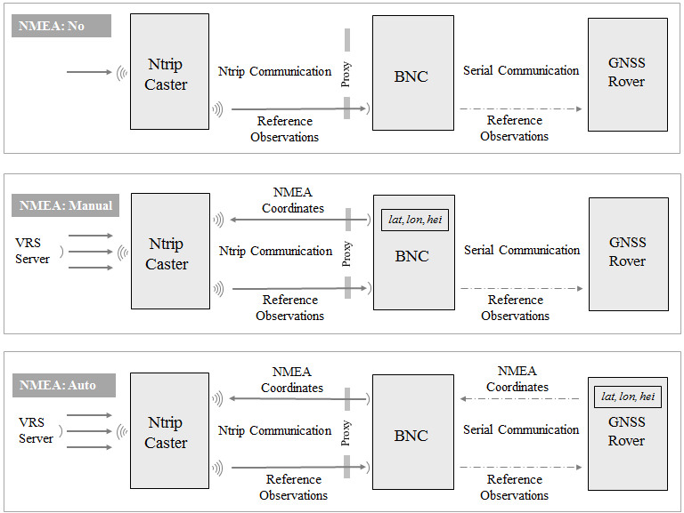
Figure 15: Flowcharts, BNC forwarding a stream to a serial connected receiver; sending NMEA sentences is mandatory for VRS streams.
The following figure shows the screenshot of an example situation where BNC pulls a VRS stream from an NTRIP Broadcaster to feed a serial connected RTK rover.
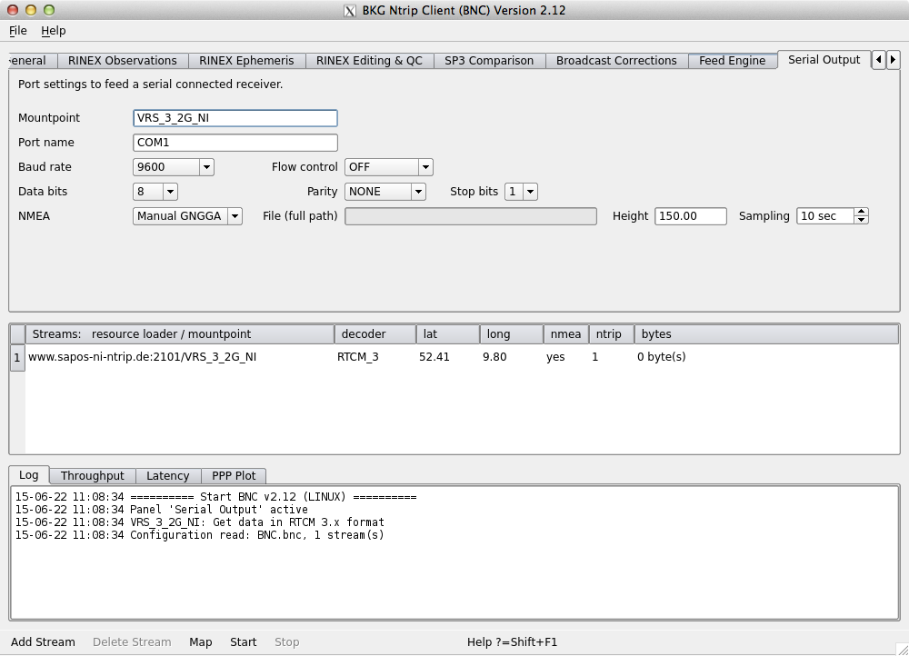
Figure 16: BNC pulling a VRS stream to feed a serial connected RTK rover.
Enter a 'Mountpoint' to forward its corresponding stream to a serial connected GNSS receiver.
When selecting one of the serial communication options listed below, make sure that you pick those configured to the serial connected receiver.
3.10.2 Port Name - mandatory if 'Mountpoint' is set
Enter the serial 'Port name' selected on your host for communication with the serial connected receiver. Valid port names are
Windows: COM1, COM2 Linux: /dev/ttyS0, /dev/ttyS1 FreeBSD: /dev/ttyd0, /dev/ttyd1 Digital Unix: /dev/tty01, /dev/tty02 HP-UX: /dev/tty1p0, /dev/tty2p0 SGI/IRIX: /dev/ttyf1, /dev/ttyf2 SunOS/Solaris: /dev/ttya, /dev/ttyb
Note that you must plug a serial cable in the port defined here before you start BNC.
3.10.3 Baud Rate - mandatory if 'Mountpoint' is set
Select a 'Baud rate' for the serial output link. Note that using a high baud rate is recommended.
3.10.4 Flow Control - mandatory if 'Mountpoint' is set
Select a 'Flow control' for the serial output link. Note that your selection must equal the flow control configured to the serial connected device. Select 'OFF' if you don't know better.
3.10.5 Parity - mandatory if 'Mountpoint' is set
Select the 'Parity' for the serial output link. Note that parity is often set to 'NONE'.
3.10.6 Data Bits - mandatory if 'Mountpoint' is set
Select the number of 'Data bits' for the serial output link. Note that often '8' data bits are used.
3.10.7 Stop Bits - mandatory if 'Mountpoint' is set
Select the number of 'Stop bits' for the serial output link. Note that often '1' stop bit is used.
3.10.8 NMEA - mandatory for VRS streams
Select 'Auto' to automatically forward all NMEA-GGA messages coming from your serial connected GNSS receiver to the NTRIP Broadcaster and/or save them in a file.
Forwarding valid NMEA-GGA messages to the NTRIP Broadcaster is required for receiving 'Virtual Reference Station' (VRS) streams. Thus, in case your serial connected receiver is not capable to provide them, the alternative for VRS streams is a 'Manual' simulation of an initial NMEA-GGA message. Its content is based on the approximate (editable) latitude/longitude from the broadcaster's source-table and an approximate VRS height to be specified.
In summary: select 'Manual' only when handling a VRS stream and your serial connected GNSS receiver doesn't generate NMEA-GGA messages. Select 'Auto' otherwise.
3.10.9 File - optional if 'Auto' NMEA is set
Specify the full path to a file where NMEA messages coming from your serial connected receiver are saved.
3.10.10 Height - mandatory if 'Manual' NMEA is set
Specify an approximate 'Height' above mean sea level in meter for your VRS to simulate an initial NMEA-GGA message. Latitude and longitude for that (editable) are taken from the broadcaster's source-table.
This option concerns only 'Virtual Reference Stations' (VRS). Its setting is ignored in case of streams coming from physical reference stations.
At any time an incoming stream might become unavailable or corrupted. In such cases, it is important that the BNC operator and/or the stream providers become aware of the situation so that necessary measures can be taken to restore the stream. Furthermore, continuous attempts to decode a corrupted stream can generate unnecessary workload for BNC. Outages and corruptions are handled by BNC as follows:
Stream outages: BNC considers a connection to be broken when there are no incoming data detected for more than 20 seconds. When this occurs, BNC will attempt to reconnect at a decreasing rate. It will first try to reconnect with 1 second delay and again in 2 seconds if the previous attempt failed. If the attempt is still unsuccessful, it will try to reconnect within 4 seconds after the previous attempt and so on. The wait time doubles each time with a maximum wait time of 256 seconds.
Stream corruption: Not all bits chunk transfers to BNC's internal decoders return valid observations. Sometimes several chunks might be needed before the next observation can be properly decoded. BNC buffers all the outputs (both valid and invalid) from the decoder for a short time span (size derived from the expected 'Observation rate') and then determines whether a stream is valid or corrupted.
Outage and corruption events are reported in the 'Log' tab. They can also be passed on as parameters to a shell script or batch file to generate an advisory note to BNC operator or affected stream providers. This functionality lets users utilize BNC as a real-time performance monitor and alarm system for a network of GNSS reference stations.
3.11.1 Observation Rate - mandatory if 'Failure threshold', 'Recovery threshold' and 'Script' is set
BNC can collect all returns (success or failure) coming from a decoder within a certain short time span to then decide whether a stream has an outage or its content is corrupted. This procedure needs a rough a priory estimate of the expected observation rate of the incoming streams.
An empty option field (default) means that you don't want explicit information from BNC about stream outages and incoming streams that cannot be decoded.
3.11.2 Failure Threshold - optional
Event 'Begin_Failure' will be reported if no data is received continuously for longer than the 'Failure threshold' time. Similarly, event 'Begin_Corrupted' will be reported when corrupted data is detected by the decoder continuously for longer than this 'Failure threshold' time. The default value is set to 15 minutes and is recommended so not to inundate user with too many event reports.
Note that specifying a value of zero '0' for the 'Failure threshold' will force BNC to report any stream failure immediately. Note also that for using this function you need to specify the 'Observation rate'.
3.11.3 Recovery Threshold - optional
Once a 'Begin_Failure' or 'Begin_Corrupted' event has been reported, BNC will check for when the stream again becomes available or uncorrupted. Event 'End_Failure' or 'End_Corrupted' will be reported as soon as valid observations are again detected continuously throughout the 'Recovery threshold' time span. The default value is set to 5 minutes and is recommended so not to inundate users with too many event reports.
Note that specifying a value of zero '0' for the 'Recovery threshold' will force BNC to report any stream recovery immediately. Note also that for using this function you need to specify the 'Observation rate'.
As mentioned previously, BNC can trigger a shell script or a batch file to be executed when one of the events described are reported. This script can be used to email an advisory note to network operator or stream providers. To enable this feature, specify the full path to the script or batch file in the 'Script' field. The affected stream's mountpoint and type of event reported ('Begin_Outage', 'End_Outage', 'Begin_Corrupted' or 'End_Corrupted') will then be passed on to the script as command line parameters (%1 and %2 on Windows systems or $1 and $2 on Unix/Linux/Mac OS X systems) together with date and time information.
Leave the 'Script' field empty if you do not wish to use this option. An invalid path will also disable this option.
Examples for command line parameter strings passed on to the advisory 'Script' are:
FFMJ0 Begin_Outage 08-02-21 09:25:59 FFMJ0 End_Outage 08-02-21 11:36:02 Begin was 08-02-21 09:25:59
Sample script for Unix/Linux/Mac OS X systems:
#!/bin/bash sleep $((60*RANDOM/32767)) cat > mail.txt <<EOF Advisory Note to BNC User, Please note the following advisory received from BNC. Stream: $* Regards, BNC EOF mail -s "NABU: $1" email@address < mail.txt
Note the sleep command in this script which causes the system to wait for a random period of up to 60 seconds before sending the email. This should avoid overloading your mail server in case of a simultaneous failure of many streams.
This section describes several miscellaneous options which can be applied for a single stream (mountpoint) or for all configured streams.
The following figure shows RTCM message numbers and observation types contained in stream 'CUT07' and the message latencies recorded every 2 seconds.
Figure 17: RTCM message numbers, latencies and observation types.
Specify a mountpoint to apply one or several of the 'Miscellaneous' options to the corresponding stream. Enter 'ALL' if you want to apply these options to all configured streams. An empty option field (default) means that you don't want BNC to apply any of these options.
BNC can average latencies per stream over a certain period of GPS time, the 'Log latency' interval. Mean latencies are calculated from the individual latencies of one (first incoming) observation or Broadcast Correction per second. The mean latencies are then saved in BNC's logfile. Note that computing correct latencies requires the clock of the host computer to be properly synchronized. Note further that visualized latencies from the 'Latency' tab on the bottom of the main window represent individual latencies and not the mean latencies for the logfile.
Latency: Latency is defined in BNC by the following equation:
UTC time provided by BNC's host
- GPS time of currently processed epoch
+ Leap seconds between UTC and GPS time
--------------
= Latency
Statistics: BNC counts the number of GPS seconds covered by at least one observation. It also estimates an observation rate (independent from the a priory specified 'Observation rate') from all observations received throughout the first full 'Log latency' interval. Based on this rate, BNC estimates the number of data gaps when appearing in subsequent intervals.
Latencies of observations or corrections to Broadcast Ephemeris and statistical information can be recorded in the 'Log' tab at the end of each 'Log latency' interval. A typical output from a 1 hour 'Log latency' interval would be:
08-03-17 15:59:47 BRUS0: Mean latency 1.47 sec, min 0.66, max 3.02, rms 0.35, 3585 epochs, 15 gaps
Select a 'Log latency' interval to activate this function or select the empty option field if you do not want BNC to log latencies and statistical information.
When configuring a GNSS receiver for RTCM stream generation, the firmware's setup interface may not provide details about RTCM message types observation types. As reliable information concerning stream contents should be available i.e. for NTRIP Broadcaster operators to maintain the broadcaster's source-table, BNC allows to scan RTCM streams for incoming message types and printout some of the contained meta-data. Contained observation types are also printed because such information is required a-priori to the conversion of RTCM Version 3 MSM streams to RINEX Version 3 files. The idea for this option arose from 'InspectRTCM', a comprehensive stream analyzing tool written by D. Stoecker.
Tick 'Scan RTCM' to scan RTCM Version 2 or 3 streams and log all contained
Note that in RTCM Version 2 the message types 18 and 19 carry only the observables of one frequency. Hence it needs two type 18 and 19 messages per epoch to transport the observations from dual frequency receivers.
Please note further that RTCM Version 3 message types 1084 for GLONASS don't contain GLONASS channel numbers. Observations from these messages can only be decoded when you include 1020 GLONASS ephemeris messages to your stream which contain the channels. You could also consider adding a second stream carrying 1087 GLONASS observation messages or 1020 GLONASS ephemeris messages as both contain the GLONASS channel numbers.
Logged time stamps refer to message reception time and allow understanding repetition rates. Enter 'ALL' if you want to log this information from all configured streams. Beware that the size of the logfile can rapidly increase depending on the number of incoming RTCM streams.
This option is primarily meant for testing and evaluation. Use it to figure out what exactly is produced by a specific GNSS receiver's configuration. An empty option field (default) means that you don't want BNC to print the message type numbers and antenna information carried in RTCM streams.
BNC can output streams related to the above specified 'Mountpoint' through a TCP/IP port of your local host. Enter a port number to activate this function. The stream contents remains untouched. BNC does not decode or reformat the data.
Be careful when keyword 'ALL' is specified as 'Mountpoint' for involving all incoming streams together because the affiliation of data to certain streams gets lost in the output.
An empty option field (default) means that you don't want BNC to apply the TCP/IP port output option.
BNC can derive coordinates for a rover position following the Precise Point Positioning (PPP) approach. It uses either code or code plus phase data in ionosphere free linear combinations P3 or L3. Besides pulling a stream of observations from a dual frequency receiver, this also
The following figure provides the screenshot of an example PPP session with BNC.
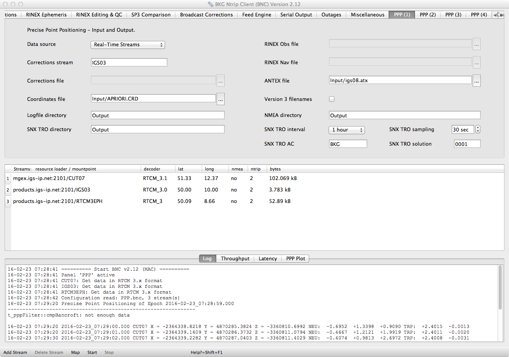
Figure 18: Precise Point Positioning with BNC, PPP Panel 1.
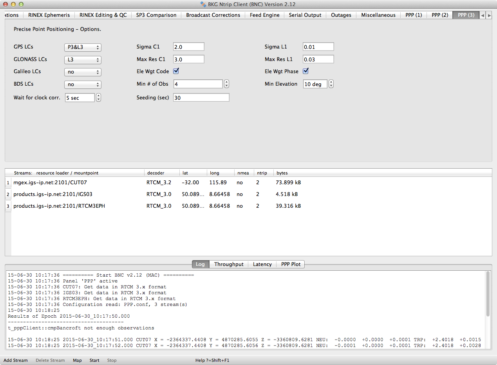
Figure 19: Precise Point Positioning with BNC, PPP Panel 2.
PPP results are shown in the 'Log' tab on the bottom of BNC's main window. Depending on the processing options, the following values are shown about once per second (example):
10-09-08 09:14:06 FFMJ1 PPP 09:14:04.0 12 4053457.429 +- 2.323 617730.551 +- 1.630 4869395.266 +- 2.951
The selected mountpoint in that is followed by a PPP time stamp in GPS Time, the number of processed satellites, and XYZ coordinates with their formal errors as derived from the implemented filter in [m]. The implemented algorithm includes outlier and cycle slip detection. The maximum for accepted residuals is hard coded to 10 meters for code observations and 10 centimeters for phase observations.
More detailed PPP results are saved in BNC's logfile. Depending on the selected processing options you find
13-11-25 11:07:04 Single Point Positioning of Epoch 11:07:01.0
--------------------------------------------------------------
11:07:01.0 RES E12 P3 -0.0206
11:07:01.0 RES E19 P3 -1.4706
11:07:01.0 RES E20 P3 1.1018
11:07:01.0 RES G01 P3 -0.3704
11:07:01.0 RES G03 P3 -0.2806
11:07:01.0 RES G06 P3 0.3635
11:07:01.0 RES G11 P3 0.1940
11:07:01.0 RES G14 P3 0.0357
11:07:01.0 RES G18 P3 -2.1105
11:07:01.0 RES G19 P3 0.4660
11:07:01.0 RES G22 P3 1.9451
11:07:01.0 RES G27 P3 -0.7073
11:07:01.0 RES G28 P3 -0.3382
11:07:01.0 RES G32 P3 0.5999
11:07:01.0 RES E12 L3 0.0204
11:07:01.0 RES E19 L3 -0.0152
11:07:01.0 RES E20 L3 -0.0119
11:07:01.0 RES G01 L3 -0.0055
11:07:01.0 RES G03 L3 0.0172
11:07:01.0 RES G06 L3 -0.0144
11:07:01.0 RES G11 L3 0.0140
11:07:01.0 RES G14 L3 0.0258
11:07:01.0 RES G18 L3 0.0192
11:07:01.0 RES G19 L3 -0.0004
11:07:01.0 RES G22 L3 -0.0272
11:07:01.0 RES G27 L3 -0.0022
11:07:01.0 RES G28 L3 -0.0040
11:07:01.0 RES G32 L3 -0.0130
11:07:01.0 RES R02 L3 -0.0576
11:07:01.0 RES R03 L3 -0.0054
11:07:01.0 RES R09 L3 0.0168
11:07:01.0 RES R10 L3 -0.0339
11:07:01.0 RES R17 L3 0.0122
11:07:01.0 RES R18 L3 0.0593
clk = -8.985 +- 0.513
trp = 2.184 -0.032 +- 0.002
offGlo = 0.175 +- 32.547
offGal = 4.711 +- 1.057
amb E20 = 286.385 +- 0.925 nEpo = 914
amb G01 = -121.366 +- 0.513 nEpo = 914
amb G18 = -9.270 +- 0.513 nEpo = 914
amb G32 = -132.475 +- 0.513 nEpo = 914
amb G27 = -32.002 +- 0.513 nEpo = 640
amb G14 = 45.672 +- 0.513 nEpo = 608
amb E19 = 126.492 +- 0.925 nEpo = 360
amb R03 = -91.230 +- 32.551 nEpo = 360
amb R09 = 29.258 +- 32.551 nEpo = 340
amb G22 = -113.167 +- 0.513 nEpo = 335
amb E12 = -122.721 +- 0.925 nEpo = 313
amb G06 = 17.432 +- 0.513 nEpo = 303
amb G11 = -182.885 +- 0.513 nEpo = 279
amb R10 = -268.896 +- 32.551 nEpo = 202
amb R02 = 198.251 +- 32.551 nEpo = 185
amb G28 = 26.367 +- 0.513 nEpo = 94
amb R17 = 30.320 +- 32.551 nEpo = 86
amb R18 = -256.708 +- 32.551 nEpo = 86
amb G19 = 32.690 +- 0.513 nEpo = 71
amb G03 = 137.912 +- 0.513 nEpo = 47
13-11-25 11:07:04 WTZ27 PPP 11:07:01.0 20 4075534.903 +- 0.019 931822.501 +- 0.015 4801609.005 +- 0.024 NEU 0.055 0.063 -0.146
13-11-25 11:07:04 WTZ27 AVE-XYZ 11:07:01.0 4075534.918 +- 0.008 931822.503 +- 0.003 4801608.994 +- 0.014
13-11-25 11:07:04 WTZ27 AVE-NEU 11:07:01.0 0.035 +- 0.010 0.062 +- 0.002 -0.145 +- 0.012
13-11-25 11:07:04 WTZ27 AVE-TRP 11:07:01.0 2.150 +- 0.002
Note that for debugging or Post Processing purposes BNC's 'PPP' functionality option can also be used offline.
When using the PPP option, it is important to understand which effects are corrected by BNC.
The provider of an orbit/clock corrections stream may switch with his service at any time from a duty to a backup server installation. This shall be noted in the SSR stream through a change of the Issue Of Data (IOD SSR) parameter. The PPP option in BNC will immediately reset all ambiguities in such a situation.
3.13.1 Mode & Mountpoints - optional
Specify the Point Positioning mode you want to apply and the mountpoints for observations and Broadcast Corrections.
Choose between plain Single Point Positioning (SPP) and Precise Point Positioning (PPP) in 'Realtime' or 'Post-Processing' mode. Options are 'Realtime-PPP', 'Realtime-SPP', and 'Post-Processing'.
3.13.1.2 Obs Mountpoint - optional
Specify an 'Observations Mountpoint' from the list of selected 'Streams' you are pulling if you want BNC to derive coordinates for the affected rover position through a Point Positioning solution.
3.13.1.3 Corr Mountpoint - optional
Specify a Broadcast Ephemeris 'Corrections Mountpoint' from the list of selected 'Streams' you are pulling if you want BNC to correct your positioning solution accordingly. Not that the stream's corrections must refer to the satellite Antenna Phase Center (APC).
3.13.2 Marker Coordinates - optional
Enter the reference coordinate XYZ of the receiver's position in meters if known. This option makes only sense for static observations. Defaults are empty option fields, meaning that the antenna's XYZ position is unknown.
Once a XYZ coordinate is defined, the 'PPP' line in BNC's logfile is extended by North, East and Up displacements to (example):
10-08-09 06:01:56 FFMJ1 PPP 06:02:09.0 11 4053457.628 +- 2.639 617729.438 +- 1.180 4869396.447 +- 1.921 NEU -0.908 -0.571 1.629
The parameters following the 'NEU' string provide North, East and Up components of the current coordinate displacement in meters.
3.13.3 Antenna Eccentricity - optional
You may like to specify North, East and Up components of an antenna eccentricity which is the difference between a nearby marker position and the antenna phase center. If you do so BNC will produce coordinates referring to the marker position and not referring to the antenna phase center.
BNC allows to output results from Precise Point Positioning in NMEA format.
Note that Tomoji Takasu has written a program called RTKPLOT for visualizing NMEA strings. It is available from http://www.rtklib.com and compatible with the NMEA file and port output of BNC's 'PPP' client option.
The NMEA sentences generated about once per second are pairs of
Specify the full path to a file where Point Positioning results are saved as NMEA messages. The default value for 'NMEA file' is an empty option field, meaning that BNC will not saved NMEA messages into a file.
Specify the IP port number of a local port where Point Positioning results become available as NMEA messages. The default value for 'NMEA Port' is an empty option field, meaning that BNC does not provide NMEA messages vi IP port. Note that the NMEA file output and the NMEA IP port output are the same.
NASA's 'World Wind' software (see http://worldwindcentral.com/wiki/NASA_World_Wind_Download) can be used for real-time visualization of positions provided through BNC's NMEA IP output port. You need the 'GPS Tracker' plug-in available from http://worldwindcentral.com/wiki/GPS_Tracker for that. The 'Word Wind' map resolution is not meant for showing centimeter level details.
3.13.5 Post Processing - optional
When in 'Post-Processing' mode
BNC accepts RINEX Version 2 as well as RINEX Version 3 Observation or Navigation file formats. Files carrying Broadcast Corrections must have the format produced by BNC through the 'Broadcast Corrections' tab.
Post Processing PPP results can be saved in a specific output file.
BNC allows correcting observations for antenna phase center offsets and variations.
3.13.6.1 ANTEX File - optional
IGS provides a file containing absolute phase center corrections for GNSS satellite and receiver antennas in ANTEX format. Entering the full path to such an ANTEX file is required for correcting observations for antenna phase center offsets and variations. It allows you to specify the name of your receiver's antenna (as contained in the ANTEX file) to apply such corrections.
Default is an empty option field, meaning that you don't want to correct observations for antenna phase center offsets and variations.
3.13.6.2 Receiver Antenna Name - optional if 'ANTEX File' is set
Specify the receiver's antenna name as defined in your ANTEX file. Observations will be corrected for the antenna phase center's offset which may result in a reduction of a few centimeters at max. Corrections for phase center variations are not yet applied by BNC. The specified name must consist of 20 characters. Add trailing blanks if the antenna name has less than 20 characters. Examples:
'JPSREGANT_SD_E ' (no radome) 'LEIAT504 NONE' (no radome) 'LEIAR25.R3 LEIT' (radome)
Default is an empty option field, meaning that you don't want to correct observations for antenna phase center offsets.
BNC allows using different Point Positioning processing options depending on the capability of the involved receiver and the application in mind. It also allows introducing specific sigmas for code and phase observations as well as for reference coordinates and troposphere estimates. You may also like to carry out your PPP solution in Quick-Start mode or enforce BNC to restart a solution if the length of an outage exceeds a certain threshold.
3.13.7.1 Use Phase Obs - optional
By default BNC applies a Point Positioning solution using an ionosphere free P3 linear combination of code observations. Tick 'Use phase obs' for an ionosphere free L3 linear combination of phase observations.
3.13.7.2 Estimate Tropo - optional
BNC estimates the tropospheric delay according to equation
T(z) = T_apr(z) + dT / cos(z)where T_apr is the a-priori tropospheric delay derived from Saastamoinen model.
By default BNC does not estimate troposphere parameters. Tick 'Estimate tropo' to estimate troposphere parameters together with the coordinates and save T_apr and dT/cos(z) in BNC's log file.
3.13.7.3 Use GLONASS - optional
By default BNC does not process GLONASS but only GPS observations when in Point Positioning mode. Tick 'Use GLONASS' to use GLONASS observations in addition to GPS (and Galileo if specified) for estimating coordinates in Point Positioning mode.
3.12.7.4 Use Galileo - optional
By default BNC does not process Galileo but only GPS observations when in Point Positioning mode. Tick 'Use Galileo' to use Galileo observations in addition to GPS (and GLONASS if specified) for estimating coordinates in Point Positioning mode.
Zero value (or empty field) means that BNC processes each epoch of data immediately after its arrival using satellite clock corrections available at that time. Non-zero value 'Sync Corr' means that the epochs of data are buffered and the processing of each epoch is postponed till the satellite clock corrections not older than 'Sync Corr' are available. Specifying a value of half the update rate of the clock corrections as 'Sync Corr' (i.e. 5 sec) may be appropriate. Note that this causes an additional delay of the PPP solutions in the amount of half of the update rate.
Using observations in sync with the corrections can avoid a possible high frequency noise of PPP solutions. Such noise could result from processing observations regardless of how late after a clock correction they were received. Note that applying the 'Sync Corr' option significantly reduces the PPP computation effort for BNC.
Default is an empty option field, meaning that you want BNC to process observations immediately after their arrival through applying the latest received clock correction.
3.13.7.6 Averaging - optional if XYZ is set
Enter the length of a sliding time window in minutes. BNC will continuously output moving average values and their RMS as computed from those individual values obtained most recently throughout this period. RMS values presented for XYZ coordinates and tropospheric zenith path delays are bias reduced while RMS values for North/East/Up (NEU) displacements are not. Averaged values for XYZ coordinates and their RMS are marked with string "AVE-XYZ" in BNC's log file and 'Log' section while averaged values for NEU displacements and their RMS are marked with string "AVE-NEU" and averaged values for the tropospheric delays and their RMS are marked with string "AVE-TRP". Example:
10-09-08 09:13:05 FFMJ1 AVE-XYZ 09:13:04.0 4053455.948 +- 0.284 617730.422 +- 0.504 4869397.692 +- 0.089 10-09-08 09:13:05 FFMJ1 AVE-NEU 09:13:04.0 1.043 +- 0.179 0.640 +- 0.456 1.624 +- 0.331 10-09-08 09:13:05 FFMJ1 AVE-TRP 09:13:04.0 2.336 +- 0.002
Entering any positive value up to 1440 (24h mean value) is allowed. An empty option field (default) means that you don't want BNC to output moving average positions into the log file and the 'Log' section. Note that averaging positions makes only sense for a stationary receiver.
3.13.7.7 Quick-Start - optional if XYZ is set
Enter the length of a startup period in seconds for which you want to fix the PPP solution to a known XYZ coordinate. Constraining coordinates is done in BNC through setting the 'XYZ White Noise' temporarily to zero.
This so-called Quick-Start option allows the PPP solutions to rapidly converge after startup. It requires that the antenna remains unmoved on the know position throughout the defined period. A value of 60 is likely to be an appropriate choice for 'Quick-Start'. Default is an empty option field, meaning that you don't want BNC to start in 'Quick-Start' mode.
You may need to create your own reference coordinate through running BNC for an hour in normal mode before applying the 'Quick-Start' option. Don't forget to introduce a realistic sigma 'XYZ Ini' according to the coordinate's precision.
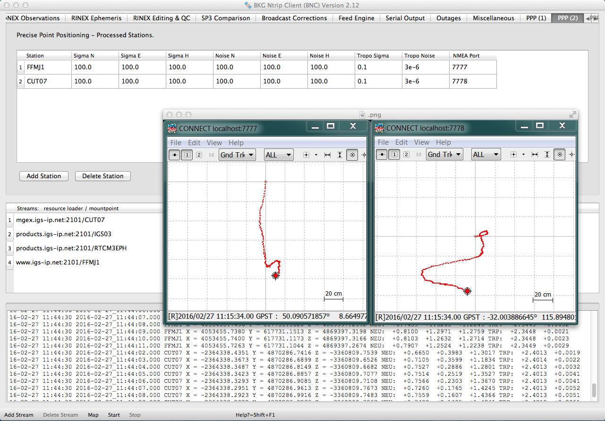
Figure 20: BNC in 'Quick-Start' mode (PPP, Panel 1)
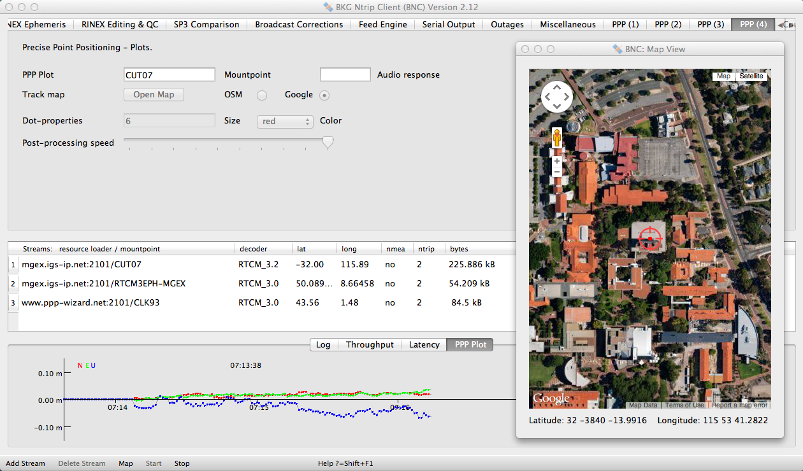
Figure 21: BNC in 'Quick-Start' mode (PPP, Panel 2)
3.13.7.8 Maximal Solution Gap - optional if Quick-Start is set
Specify a 'Maximum Solution Gap' in seconds. Should the time span between two consecutive solutions exceed this limit, the algorithm returns into the 'Quick-Start' mode and fixes the introduced reference coordinate for the specified 'Quick-Start' period. A value of '60' seconds could be an appropriate choice.
This option makes only sense for a stationary operated receiver where solution convergence can be enforced because a good approximation for the rover position is known. Default is an empty option field, meaning that you don't want BNC to return into the 'Quick-Start' mode after failures caused i.e. by longer lasting outages.
3.13.7.9 Audio Response - optional if Quick-Start is set
For natural hazard prediction and monitoring it may be appropriate to generate audio alerts. For that you can specify an 'Audio response' threshold in meters. A beep is produced by BNC whenever a horizontal PPP coordinate component differs by more than the threshold value from the specified marker coordinate.
Default is an empty option field, meaning that you don't want BNC to produce acoustic warning signals.
You may like to introduce specific sigmas for code and phase observations and for the estimation of troposphere parameters.
3.13.8.1 Code - mandatory if 'Use Phase Obs' is set
When 'Use phase obs' is set in BNC, the PPP solution will be carried out using both, code and phase observations. A sigma of 10.0 m for code observations and a sigma of 0.02 m for phase observations (defaults) are used to combine both types of observations. As the convergence characteristic of a PPP solution can be influenced by the ratio of the sigmas for code and phase, you may like to introduce you own sigmas for code and phase observations which differ from the default values.
Specify a sigma for code observations. Default is 10.0 m.
3.13.8.2 Phase - mandatory if 'Use Phase Obs' is set
Specify a sigma for phase observations. Default is 0.02 m.
Enter a sigma in meters for the initial XYZ coordinate. A value of 100.0 (default) may be an appropriate choice. However, this value may be significantly smaller (i.e. 0.01) when starting for example from a station with known XZY position in Quick-Start mode.
3.13.8.4 XYZ White Noise - mandatory
Enter a sigma in meters for the 'White Noise' of estimated XYZ coordinate components. A value of 100.0 (default) may be appropriate when considering possible sudden movements of a rover.
3.13.8.5 Tropo Init - mandatory if 'Estimate tropo' is set
Enter a sigma in meters for the a-priory model based tropospheric delay estimation. A value of 0.1 (default) may be an appropriate choice.
3.13.8.6 Tropo White Noise - mandatory if 'Estimate tropo' is set
Enter a sigma in meters per second to describe the expected variation of the tropospheric effect. Supposing 1Hz observation data, a value of 3e-6 (default) would mean that the tropospheric effect may vary for 3600 * 3e-6 = 0.01 meters per hour.
PPP time series of North (red), East (green) and Up (blue) displacements will be plotted in the 'PPP Plot' tab when this option is ticked. Values will be either referred to an XYZ reference coordinate (if specified) or referred to the first estimated XYZ coordinate. The sliding PPP time series window will cover the period of the latest 5 minutes.
Note that a PPP time series makes only sense for a stationary operated receiver.
You make like to track your rover position using Google Maps or Open StreetMap as a background map. Track maps can be produced with BNC in 'Realtime-PPP', 'Realtime-SPP' and 'Post-Processing' PPP mode.
When in 'Post-Processing' mode you should not forget to specify a proxy under the 'Network' tab if that is operated in front of BNC.
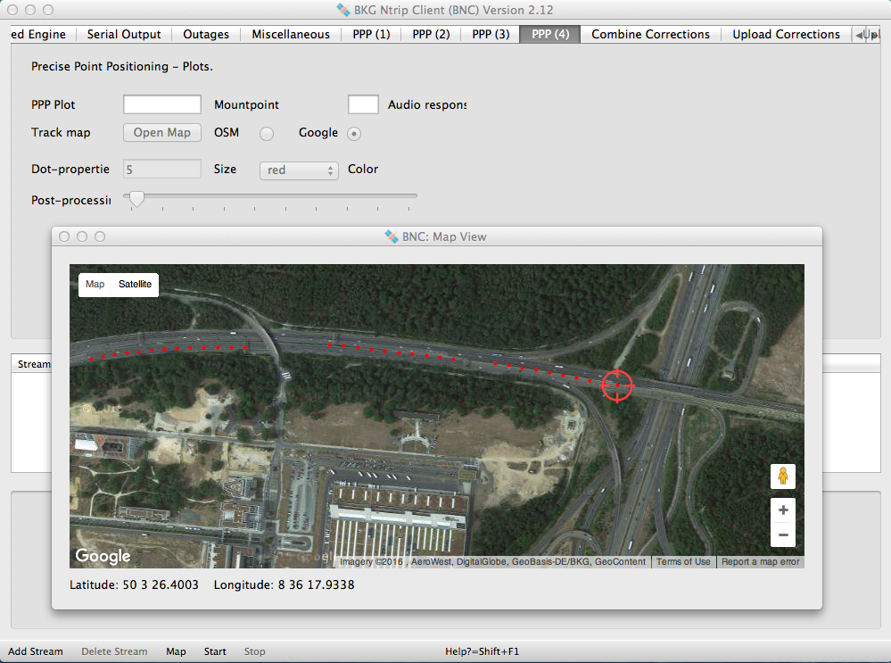
Figure 22: Track of positions from BNC with Google Maps in the background.
The 'Open Map' button opens a windows showing a map according to options specified below.
3.13.10.2 Google/OSM - mandatory before pushing 'Open Map'
Specify either 'Google' or 'OSM' as the background for your rover positions.
3.13.10.3 Dot Size - mandatory before pushing 'Open Map'
Specify the size of dots showing the rover position. A dot size of '3' may be appropriate. The maximum possible dot size is '10'. An empty option field or a size of '0' would mean that you don't want BNC to show the rover's track on the map.
3.13.10.4 Dot Color - mandatory before pushing 'Open Map'
Specify the color of dots showing the rover track.
3.13.10.5 Speed - mandatory before pushing 'Open Map'
With BNC in PPP post-processing mode you can specify the speed of computations as appropriate for visualization. Note that you can adjust 'Speed' on-the-fly while BNC is processing your observatins.
BNC allows processing several orbit and clock correction streams in real-time to produce, encode, upload and save a combination of Broadcast Corrections from various providers. All corrections must refer to satellite Antenna Phase Centers (APC). It is so far only the satellite clock corrections which are combined while orbit corrections in the combination product as well as the product update rates are just taken over from one of the incoming Broadcast Correction streams. Combining only clock corrections using a fixed orbit reference has the possibility to introduce some analysis inconsistencies. We may therefore eventually consider improvements on this approach. The clock combination can be based either on a plain 'Single-Epoch' or on a 'Kalman' Filter approach.
In the Kalman Filter approach satellite clocks estimated by individual Analyses Centers (ACs) are used as pseudo observations within the adjustment process. Each observation is modeled as a linear function (actually a simple sum) of three estimated parameters: AC specific offset, satellite specific offset common to all ACs, and the actual satellite clock correction which represents the result of the combination. These three parameter types differ in their statistical properties. The satellite clock offsets are assumed to be static parameters while AC specific and satellite specific offsets are stochastic parameters with appropriate white noise. The solution is regularized by a set of minimal constraints. After a change of one of the values 'SSR Provider ID', 'SSR Solution ID', or 'IOD SSR' the satellite clock offsets belonging to the corresponding analysis center are reset in adjustment.
Removing the AC-dependent biases as well as possible is a major issue with clock combinations. Since they vary in time, it can be tricky to do this. Otherwise, there will be artificial jumps in the combined clock stream if one or more AC contributions drop out for certain epochs. Here the Kalman Filter approach is expected to do better than the Single-Epoch approach.
In view of IGS real-time products, the 'Combine Corrections' functionality has been integrated in BNC because
Note that the combination process requires real-time access to Broadcast Ephemeris. So, in addition to the orbit and clock correction streams BNC must pull a stream carrying Broadcast Ephemeris in the form of RTCM Version 3 messages. Stream 'RTCM3EPH' on caster products.igs-ip.net is an example for that.
Note further that you need to tick the 'Use GLONASS' option which is part of the 'PPP (2)' panel in case you want to produce an GPS plus GLONASS combination.
A combination is carried out following a specified sampling interval. If incoming streams have different rates, only epochs that correspond to the sampling interval are used.
With respect to IGS, it is important to understand that a major effect in the combination of GNSS orbit and clock correction streams is the selection of ACs to include. It is likely that a combination product could be improved in accuracy by using only the best two or three ACs. However, with only a few ACs to depend on, the reliability of the combination product could suffer and the risk of total failures increases. So there is an important tradeoff here that must be considered when selecting streams for a combination. The major strength of a combination product is its reliability and stable median performance which can be much better than that of any single AC product.
This comment applies in situations where we have a limited number of solutions to combine and their quality varies significantly. The situation may be different when the total number of ACs is larger and the range of AC variation is smaller. In that case, a standard full combination is probably the best.
The following recursive algorithm is used to detect orbit outliers in the Kalman Filter combination when Broadcast Corrections are provided by several ACs:
Step 1: We don't produce a combination for a certain satellite if only one AC provides corrections for it.
Step 2: A mean satellite position is calculated as the average of positions from all ACs.
Step 3: For each AC and satellite the 3D distance between individual and mean satellite position is calculated.
Step 4: We find the greatest difference between AC specific and mean satellite positions.
Step 5: If that is less than a threshold, the conclusion is that we don't have an outlier and can proceed to the next epoch.
Step 6: If that is greater than a threshold, then corrections of the affiliated AC are ignored for the affected epoch and the outlier detection restarts with step 1.
Note that BNC can produce an internal PPP solution from combined Broadcast Corrections. For that you have to specify the keyword 'INTERNAL' as 'Corrections Mountpoint' in the PPP (1) panel.
The part of BNC which enables the combination of Broadcast Corrections is not intended for publication under GNU General Public License (GPL). However, pre-compiled BNC binaries which support the 'Combine Corrections' option are made available.
3.14.1 Combine Corrections Table - optional
Hit the 'Add Row' button, double click on the 'Mountpoint' field, enter a Broadcast Corrections mountpoint from the 'Streams' section and hit Enter. Then double click on the 'AC Name' field to enter your choice of an abbreviation for the Analysis Center (AC) providing the Antenna Phase Center (APC) related stream. Finally, double click on the 'Weight' field to enter a weight to be applied to this stream in the combination. The stream processing can already be started with only one corrections stream configured for combination.
Note that an appropriate 'Wait for full corr epoch' value needs to be specified for the combination under the 'Broadcast Corrections' tab. To give an example: a value of 15 sec would make sense if the update rate of incoming clock corrections is 10 sec.
The sequence of entries in the 'Combine Corrections' table is not of importance. Note that the orbit information in the final combination stream is just copied from one of the incoming streams. The stream used for providing the orbits may vary over time: if the orbit providing stream has an outage then BNC switches to the next remaining stream for getting hold of the orbit information.
Default is an empty 'Combine Corrections' table meaning that you don't want BNC to combine orbit and clock correction streams.
It is possible to specify only one Broadcast Ephemeris corrections stream in the 'Combine Corrections' table. Instead of combining corrections from several sources, BNC will then merge the single corrections stream with Broadcast Ephemeris to save results in SP3 and/or Clock RINEX format when specified accordingly under the 'Upload Corrections' tab. Note that in such a BNC application you must not pull more than one Broadcast Ephemeris corrections stream even if a second stream would provide the same corrections from a backup caster.
3.14.1.1 Add Row, Delete - optional
Hit 'Add Row' button to add another row to the 'Combine Corrections' table or hit the 'Delete' button to delete the highlighted row(s).
The following screenshots describe an example setup of BNC when combining Broadcast Correction streams and uploading them to an NTRIP Broadcaster. Note that it requires specifying options under tabs 'Combine Corrections' and 'Upload Corrections'. The example uses the combination product to simultaneously carry out an 'INTERNAL' PPP solution in 'Quick-Start' mode which allows monitoring the quality of the combination product in the space domain.
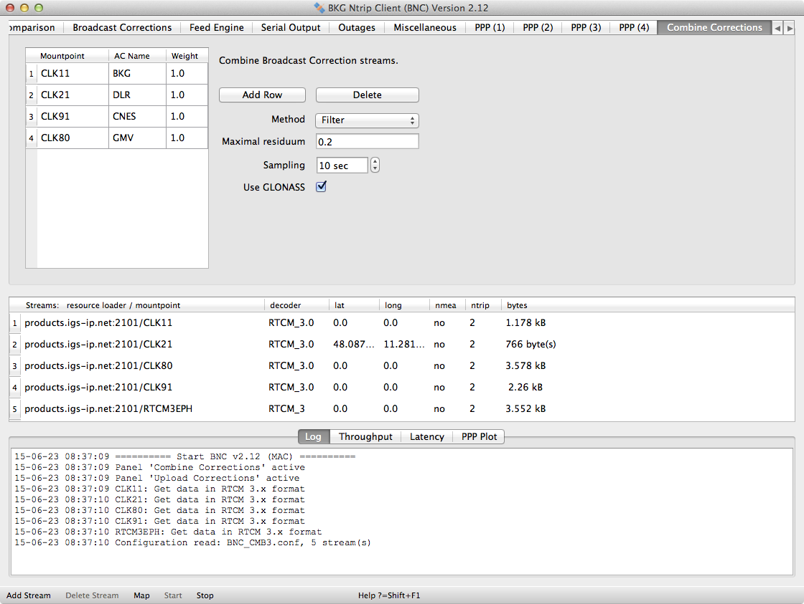
Figure 23: BNC combining Broadcast Correction streams.
Figure 24: BNC uploading the combined Broadcast Corrections stream.
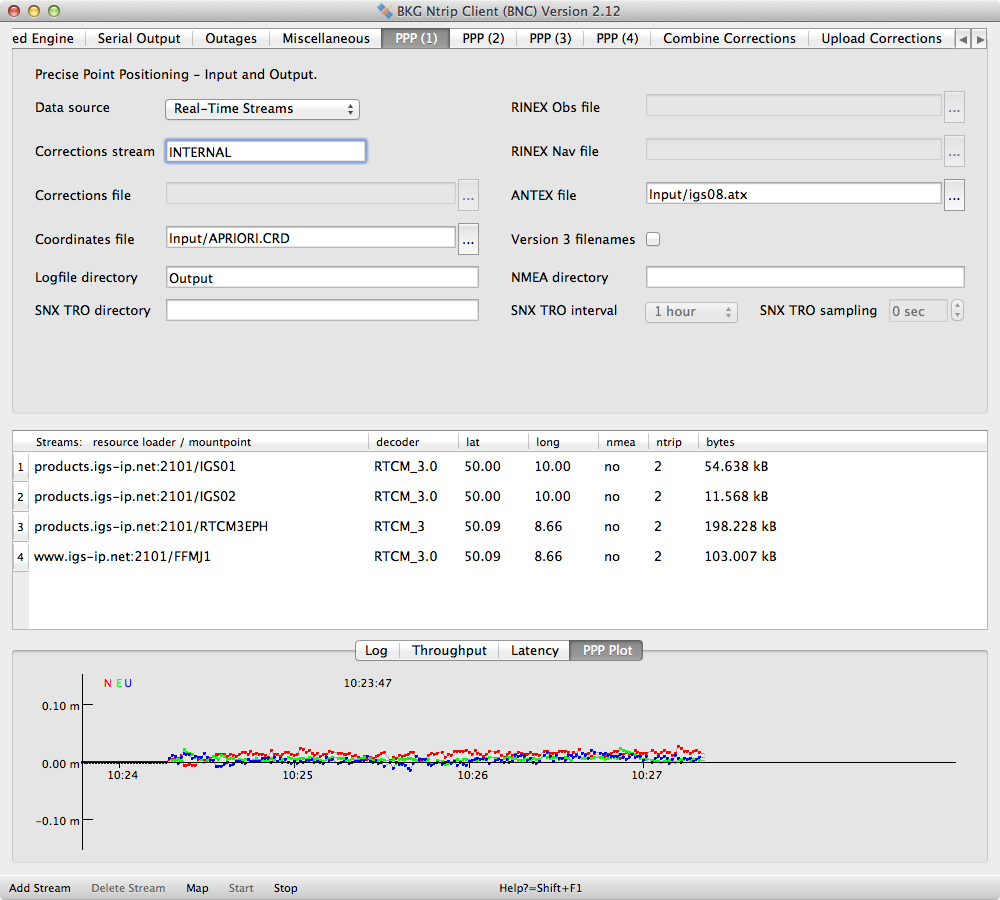
Figure 25: 'INTERNAL' PPP with BNC using combined Broadcast Corrections stream.
3.13.1.2 Method - mandatory if 'Combine Corrections' table is populated
Select a clock combination method. Available options are Kalman 'Filter' and 'Single-Epoch. It is suggested to use the Kalman Filter approach in case the combined stream of Broadcast Corrections is intended for Precise Point Positioning.
3.14.1.3 Maximal Residuum - mandatory if 'Combine Corrections' table is populated
BNC combines all incoming clocks according to specified weights. Individual clock estimates that differ by more than 'Maximal Residuum' meters from the average of all clocks will be ignored.
It is suggested to specify a value of about 0.2 m for the Kalman filter combination approach and a value of about 3.0 meters for the Single-Epoch combination approach.
Default is a 'Maximal Residuum' of 999.0 meters
3.14.1.4 Sampling - mandatory if 'Combine Corrections' table is populated
Specify a combination sampling interval. Orbit and clock corrections will be produced following that interval. A value of 10 sec may be an appropriate choice.
BNC can upload streams carrying orbit and clock corrections to Broadcast Ephemeris in radial, along-track and cross-track components if they are
The orbit and clock corrections to Broadcast Ephemeris are usually referred to the latest set of broadcast messages, which are generally also received in real-time by a GNSS rover. However, the use of the latest broadcast message is delayed for a period of 60 seconds, measured from the time of complete reception of ephemeris and clock parameters, in order to accommodate rover applications to obtain the same set of broadcast orbital and clock parameters. This procedure is recommended in the RTCM SSR standard.
Because the encoding process may put a significant load on the communication link between BNC and the real-time GNSS engine, it is recommended to run both programs on the same host. However, doing so is not compulsory.The usual handling of BNC when uploading a stream with Broadcast Corrections is that you first specify Broadcast Ephemeris and Broadcast Correction streams. You then specify an NTRIP Broadcaster for stream upload before you start the program.
'RTNET' Stream Format
When uploading an SSR stream generated according to b. then BNC requires precise GNSS orbits and clocks in the IGS Earth-Centered-Earth-Fixed (ECEF) reference system and in a specific ASCII format named 'RTNET' because the data may come from a real-time engine such as RTNET. The sampling interval for data transmission should not exceed 15 sec. Note that otherwise tools involved in IP streaming such as NTRIP Broadcasters or NTRIP Clients may respond with a timeout.
Below you find an example for the 'RTNET' ASCII format coming from a real-time GNSS engine. Each epoch begins with an asterisk character followed by the time as year, month, day of month, hour, minute and second. Subsequent records can provide
<SatelliteID> <key> <numValues> <value1 value2 ...> <key> <numValues> <value1 value2 ...> ...
The following satellite specific keys and values are currently specified in BNC:
| Key | Values |
| APC | Satellite Antenna Phase Center coordinates in meters |
| Clk | Satellite clock correction in meters, relativistic correction applied like in broadcast clocks |
| Vel | Satellite velocity in meters per second |
| CoM | Satellite Center of Mass coordinates in meters |
| CodeBias | Satellite Code Biases in meters with two characters for frequency and tracking mode per bias as defined in RINEX 3 and preceded by total number of biases |
| YawAngle | Satellite Yaw Angle in radiant, which shall be used for the computation of phase wind-up correction |
| YawRate | Satellite Yaw Rate in semi-circles per second, which is the rate of Yaw Angle |
| PhaseBias | Satellite Phase Biases in meters with two characters for frequency and tracking mode per bias as defined in RINEX 3, preceded by total number of biases and followed by Signal Wilde-Lane Integer Indicator as well as Signal Discontinuity Counter |
| Key | Values |
| IND | Stands for phase bias information and is followed by Dispersive Bias Consistency Indicator and MW Consistency Indicator |
| VTEC | Stands for Vertical TEC information and is followed by Update Interval and Number of Ionospheric Layers |
Because each keyword is associated to a certain number of values, an 'old' BNC could be operated with an incoming 'new' RTNET stream containing so far unknown keys - they would just be skipped in BNC.
Example for 'RTNET' stream contents and format:
* 2015 6 11 15 10 40.000000 VTEC 0 1 0 6 6 450000.0 20.4660 0.0000 0.0000 0.0000 0.0000 0.0000 0.0000 5.3590 9.6580 0.0000 0.0000 0.0000 0.0000 0.0000 -6.3610 -0.1210 1.1050 0.0000 0.0000 0.0000 0.0000 -2.7140 -1.8200 -0.9920 -0.6430 0.0000 0.0000 0.0000 1.9140 -0.5180 0.2530 0.0870 -0.0110 0.0000 0.0000 2.2950 1.0510 -0.9540 0.6220 -0.0720 -0.0810 0.0000 -0.9760 0.7570 0.2320 -0.2520 0.1970 -0.0680 -0.0280 0.0000 0.0000 0.0000 0.0000 0.0000 0.0000 0.0000 0.0000 0.2720 0.0000 0.0000 0.0000 0.0000 0.0000 0.0000 1.1100 -1.0170 0.0000 0.0000 0.0000 0.0000 0.0000 -1.1500 0.5440 0.9890 0.0000 0.0000 0.0000 0.0000 -0.3770 -0.1990 0.2670 -0.0470 0.0000 0.0000 0.0000 0.6550 -0.0130 -0.2310 -0.4810 -0.3510 0.0000 0.0000 0.2360 -0.0710 0.0280 0.1900 -0.0810 0.0710 IND 0 1 G01 APC 3 -14442611.532 -13311059.070 -18020998.395 Clk 1 -1426.920500 Vel 3 2274.647600 -28.980300 -1787.861900 CoM 3 -14442612.572 -13311059.518 -18020999.539 CodeBias 6 1W -3.760000 1C -3.320000 2W -6.200000 2X -5.780000 1H -3.350000 5I -5.430000 YawAngle 1 -0.315600 YawRate 1 0.0 PhaseBias 3 1C 3.9473 1 2 4 2W 6.3143 1 2 4 5I 6.7895 1 2 4 G02 APC 3 -8859103.160 14801278.856 20456920.800 Clk 1 171219.083500 Vel 3 -2532.296700 -161.275800 -1042.884100 CoM 3 -8859103.418 14801279.287 20456921.395 CodeBias 6 1W 3.930000 1C 3.610000 2W 6.480000 2X 0.000000 1H 3.580000 5I 0.000000 YawAngle 1 -0.693500 YawRate 1 0.0 PhaseBias 2 1C -4.0902 1 2 4 2W -6.7045 1 2 4 G03 APC 3 -13788295.679 -22525098.353 2644811.508 Clk 1 104212.074300 Vel 3 102.263400 -429.953400 -3150.231900 CoM 3 -13788296.829 -22525099.534 2644811.518 CodeBias 6 1W -2.650000 1C -2.160000 2W -4.360000 2X -4.480000 1H -2.070000 5I -5.340000 YawAngle 1 -0.428800 YawRate 1 0.0 PhaseBias 3 1C 2.9024 1 2 2 2W 4.6124 1 2 2 5I 5.3694 1 2 2 .. R01 APC 3 -6783489.153 -23668850.753 6699094.457 Clk 1 - 45875.658100 Vel 3 -267.103000 -885.983700 -3403.253200 CoM 3 -6783489.307 -23668853.173 6699095.274 CodeBias 4 1P -2.496400 1C -2.490700 2P -4.126600 2C -3.156200 R02 APC 3 -11292959.022 -10047039.425 20577343.288 Clk 1 41215.750900 Vel 3 -476.369400 -2768.936600 -1620.000600 CoM 3 -11292959.672 -10047040.710 20577345.344 CodeBias 4 1P 0.211200 1C 0.391300 2P 0.349100 2C 0.406300 R03 APC 3 -9226469.614 9363128.850 21908853.313 Clk 1 13090.322800 Vel 3 -369.088600 -2964.934500 1111.041000 CoM 3 -9226470.226 9363129.442 21908855.791 CodeBias 4 1P 2.283800 1C 2.483800 2P 3.775300 2C 3.785500 .. E11 APC 3 2965877.898 17754418.441 23503540.946 Clk 1 33955.329000 Vel 3 -1923.398100 1361.709200 -784.555800 CoM 3 2965878.082 17754418.669 23503541.507 CodeBias 3 1B 1.382100 5Q 2.478400 7Q 2.503300 E12 APC 3 -14807433.144 21753389.581 13577231.476 Clk 1 -389652.211900 Vel 3 -1082.464300 825.868400 -2503.982200 CoM 3 -14807433.366 21753389.966 13577231.926 CodeBias 3 1B 0.386600 5Q 0.693300 7Q 0.534700 E19 APC 3 -15922225.351 8097517.292 23611910.403 Clk 1 -2551.650800 Vel 3 -183.377800 -2359.143700 684.105100 CoM 3 -15922225.569 8097517.329 23611910.995 CodeBias 3 1B -1.777000 5Q -3.186600 7Q -3.069100 .. EOE
Note that the end of an epoch in the incoming stream is indicated by an ASCII string 'EOE' (for End Of Epoch).
When using clocks from Broadcast Ephemeris (with or without applied corrections) or clocks from SP3 files, it may be important to understand that they are not corrected for the conventional periodic relativistic effect. Chapter 10 of the IERS Conventions 2003 mentions that the conventional periodic relativistic correction to the satellite clock (to be added to the broadcast clock) is computed as dt = -2 (R * V) / c^2 where R *V is the scalar product of the satellite position and velocity and c is the speed of light. This can also be found in the GPS Interface Specification, IS-GPS-200, Revision D, 7 March 2006.
3.15.1 Add, Delete Row - optional
Hit 'Add Row' button to add another row to the stream 'Upload Table' or hit the 'Delete' button to delete the highlighted row(s).
Having an empty 'Upload Table' is default and means that you don't want BNC to upload orbit and clock correction streams to any NTRIP Broadcaster.
3.15.2 Host, Port, Mountpoint, Password - mandatory if 'Upload Table' entries specified
Specify the domain name or IP number of an NTRIP Broadcaster for uploading the stream. Furthermore, specify the caster's listening IP port, an upload mountpoint and an upload password. Note that NTRIP Broadcasters are often configured to provide access on more than one port, usually port 80 and 2101. If you experience communication problems on port 80, you should try to use the alternative port(s).
BNC uploads a stream to the NNTRIP Broadcaster by referring to a dedicated mountpoint that has been set by its operator. Specify here the mountpoint based on the details you received for your stream from the operator. It is often a four character ID (capital letters) plus an integer number.
The stream upload may be protected through an upload 'Password'. Enter the password you received from the NTRIP Broadcaster operator along with the mountpoint(s).
If 'Host', 'Port', 'Mountpoint' and 'Password' are set, the stream will be encoded in RTCM's 'State Space Representation' (SSR) messages and uploaded to the specified broadcaster following the NTRIP Version 1 transport protocol.
3.15.3 System - mandatory if 'Host' is set
BNC allows configuring several Broadcast Correction streams for upload so that they refer to different reference systems and different NTRIP Broadcasters. You may use this functionality for parallel support of a backup NTRIP Broadcaster or for simultaneous support of various regional reference systems. Available options for transforming orbit and clock corrections to specific target reference systems are
Because a mathematically strict transformation to a regional reference system is not possible on the BNC server side when a scale factor is involved, the program follows an approximate solution. While orbits are transformed in full accordance with given equations, a transformed clock is derived through applying correction term
dC = (s - 1) / s * ρ / c
where s is the transformation scale, c is the speed of light, and ρ are the topocentric distance between an (approximate) center of the transformation's validity area and the satellite.
From a theoretical point of view this kind of approximation leads to inconsistencies between orbits and clocks and is therefore not allowed. However, it has been proved that resulting errors in Precise Point Positioning are on millimeter level for horizontal components and below the one centimeter for height components. The Australian GDA94 transformation with its comparatively large scale parameter is an exception in this as discrepancies may reach up to two centimeters there.
IGS08: As the orbits and clocks coming from real-time GNSS engine are expected to be in the IGS08 system, no transformation is carried out if this option is selected.
ETRF2000: The formulas for the transformation 'ITRF2008->ETRF2000' are taken from 'Claude Boucher and Zuheir Altamimi 2008: Specifications for reference frame fixing in the analysis of EUREF GPS campaign', see http://etrs89.ensg.ign.fr/memo-V8.pdf. The following 14 Helmert Transformation Parameters were introduced:
Translation in X at epoch To: 0.0521 m Translation in Y at epoch To: 0.0493 m Translation in Z at epoch To: -0.0585 m Translation rate in X: 0.0001 m/y Translation rate in Y: 0.0001 m/y Translation rate in Z: -0.0018 m/y Rotation in X at epoch To: 0.891 mas Rotation in Y at epoch To: 5.390 mas Rotation in Z at epoch To: -8.712 mas Rotation rate in X: 0.081 mas/y Rotation rate in Y: 0.490 mas/y Rotation rate in Z: -0.792 mas/y Scale at epoch To : 0.00000000134 Scale rate: 0.00000000008 /y To: 2000.0
NAD83: Formulas for the transformation 'ITRF2008->NAD83' are taken from 'Chris Pearson, Richard Snay 2013: Introducing HTDP 3.1 to transform coordinates across time and spatial reference frames', GPS Solutions, January 2013, Volume 17, Issue 1, pp 1-15.
Translation in X at epoch To: 0.99343 m Translation in Y at epoch To: -1.90331 m Translation in Z at epoch To: -0.52655 m Translation rate in X: 0.00079 m/y Translation rate in Y: -0.00060 m/y Translation rate in Z: -0.00134 m/y Rotation in X at epoch To: -25.91467 mas Rotation in Y at epoch To: -9.42645 mas Rotation in Z at epoch To: -11.59935 mas Rotation rate in X: -0.06667 mas/y Rotation rate in Y: 0.75744 mas/y Rotation rate in Z: 0.05133 mas/y Scale at epoch To : 0.00000000171504 Scale rate: -0.00000000010201 /y To: 1997.0
GDA94: The formulas for the transformation 'ITRF2008->GDA94' are taken from 'John Dawson, Alex Woods 2010: ITRF to GDA94 coordinate transformations', Journal of Applied Geodesy, 4 (2010), 189-199, de Gruyter 2010. DOI 10.1515/JAG.2010.019'.
Translation in X at epoch To: -0.08468 m Translation in Y at epoch To: -0.01942 m Translation in Z at epoch To: 0.03201 m Translation rate in X: 0.00142 m/y Translation rate in Y: 0.00134 m/y Translation rate in Z: 0.00090 m/y Rotation in X at epoch To: 0.4254 mas Rotation in Y at epoch To: -2.2578 mas Rotation in Z at epoch To: -2.4015 mas Rotation rate in X: -1.5461 mas/y Rotation rate in Y: -1.1820 mas/y Rotation rate in Z: -1.1551 mas/y Scale at epoch To : 0.000000009710 Scale rate: 0.000000000109 /y To: 1994.0
SIRGAS2000: The formulas for the transformation 'ITRF2008->SIRGAS2000' were provided via personal communication from CGED-Coordenacao de Geodesia, IBGE/DGC - Diretoria de Geociencias, Brazil..
Translation in X at epoch To: 0.0020 m Translation in Y at epoch To: 0.0041 m Translation in Z at epoch To: 0.0039 m Translation rate in X: 0.0000 m/y Translation rate in Y: 0.0000 m/y Translation rate in Z: 0.0000 m/y Rotation in X at epoch To: 0.170 mas Rotation in Y at epoch To: -0.030 mas Rotation in Z at epoch To: 0.070 mas Rotation rate in X: 0.000 mas/y Rotation rate in Y: 0.000 mas/y Rotation rate in Z: 0.000 mas/y Scale at epoch To : -0.000000001000 Scale rate: 0.000000000000 /y To: 0000.0
SIRGAS95: The formulas for the transformation 'ITRF2005->SIRGAS95' were provided via personal communication from Gustavo Acuha, Laboratorio de Geodesia Fisica y Satelital at Zulia University (LGFS-LUZ), parameters based on values from Table 4.1 of "Terrestrial Reference Frames (April 10, 2009), Chapter 4" in http://tai.bipm.org/iers/convupdt/convupdt_c4.html..
Translation in X at epoch To: 0.0077 m Translation in Y at epoch To: 0.0058 m Translation in Z at epoch To: -0.0138 m Translation rate in X: 0.0000 m/y Translation rate in Y: 0.0000 m/y Translation rate in Z: 0.0000 m/y Rotation in X at epoch To: 0.000 mas Rotation in Y at epoch To: 0.000 mas Rotation in Z at epoch To: -0.003 mas Rotation rate in X: 0.000 mas/y Rotation rate in Y: 0.000 mas/y Rotation rate in Z: 0.000 mas/y Scale at epoch To : 0.00000000157 Scale rate: -0.000000000000 /y To: 1995.4
DREF91: 'Referenzkoordinaten fr SAPOS, Empfehlungen der Projektgruppe SAPOS-Koordinatenmonitoring 2008', Personal communication with Peter Franke, BKG, Germany. The following 14 Helmert Transformation Parameters were introduced:
Translation in X at epoch To: -0.0118 m Translation in Y at epoch To: 0.1432 m Translation in Z at epoch To: -0.1117 m Translation rate in X: 0.0001 m/y Translation rate in Y: 0.0001 m/y Translation rate in Z: -0.0018 m/y Rotation in X at epoch To: 3.291 mas Rotation in Y at epoch To: 6.190 mas Rotation in Z at epoch To: -11.012 mas Rotation rate in X: 0.081 mas/y Rotation rate in Y: 0.490 mas/y Rotation rate in Z: -0.792 mas/y Scale at epoch To : 0.00000001224 Scale rate: 0.00000000008 /y To: 2000.0
Custom: Feel free to specify your own 14 Helmert Transformation parameters for transformations from IGS08/ITRF2008 into your own target system.
3.15.4 Center of Mass - optional
BNC allows to either referring Broadcast Corrections to the satellite's Center of Mass (CoM) or to the satellite's Antenna Phase Center (APC). By default corrections refer to APC. Tick 'Center of Mass' to refer uploaded corrections to CoM.
Specify a path for saving the generated orbit corrections as SP3 orbit files. If the specified directory does not exist, BNC will not create SP3 orbit files. The following is a path example for a Linux system:
/home/user/BNC${GPSWD}.sp3
Note that '${GPSWD}' produces the GPS Week and Day number in the file name.
Default is an empty option field, meaning that you don't want BNC to save the uploaded stream contents in daily SP3 files.
As an SP3 file contents should be referred to the satellites Center of Mass (CoM) while Broadcast Corrections are referred to the satellites APC, an offset has to be applied which is available from an IGS ANTEX file (see section 'ANTEX File'). You should therefore specify the 'ANTEX File' path under tab 'PPP (2)' if you want to save the stream contents in SP3 format. If you don't specify an 'ANTEX File' path there, the SP3 file contents will be referred to the satellites APCs.
The file names for the daily SP3 files follow the convention for SP3 file names. The first three characters of each file name are set to 'BNC'. Note that clocks in the SP3 orbit files are not corrected for the conventional periodic relativistic effect.
In case the 'Combine Corrections' table contains only one Broadcast Corrections stream, BNC will merge that stream with Broadcast Ephemeris to save results in files specified here through SP3 and/or Clock RINEX file path. In such a case you have to define only the SP3 and Clock RINEX file path and no further option in the 'Upload Corrections' table.
Note that BNC outputs a complete list of SP3 'Epoch Header Records' even if no 'Position and Clock Records' are available for certain epochs because of stream outages. Note further that the 'Number of Epochs' in the first SP3 header record may not be correct because that number is not available when the file is created. Depending on your processing software (e.g. Bernese GNSS Software, BSW) it could therefore be necessary to correct an incorrect 'Number of Epochs' in the file before you use in Post Processing.
The clock corrections generated by BNC for upload can be logged in Clock RINEX format. The file naming follows the RINEX convention.
Specify a path for saving the generated clock corrections as Clock RINEX files. If the specified directory does not exist, BNC will not create Clock RINEX files. The following is a path example for a Linux system:
/home/user/BNC${GPSWD}.clk
Note that '${GPSWD}' produces the GPS Week and Day number in the file name.
Note further that clocks in the Clock RINEX files are not corrected for the conventional periodic relativistic effect.
3.15.7 Interval - mandatory if 'Upload Table' entries specified
Select the length of Clock RINEX files and SP3 Orbit files. The default value is 1 day.
3.15.8 Sampling - mandatory if 'Upload Table' entries specified
BNC requires an orbit corrections sampling interval for the stream to be uploaded and sampling intervals for SP3 and Clock RINEX files. The outgoing stream's clock correction sampling interval follows that of incoming corrections and is therefore nothing to be specified here.
3.15.8.1 Orbits - mandatory if 'Upload Table' entries specified
Select the stream's orbit correction sampling interval in seconds. A value of 60 sec may be appropriate.
A value of zero '0' tells BNC to upload all orbit correction samples coming in from the real-time GNSS engine along with the clock correction samples to produce combined orbit and clock corrections to Broadcast Ephemeris (1060 for GPS, 1066 for GLONASS).
Configuration examples:
Let us suppose a real-time network engine supporting BNC every 5 sec with GPS Broadcast Corrections for orbits, clocks and code biases in 'RTNET' stream format.3.15.8.2 SP3 - mandatory if 'SP3 File' is specified
Select the SP3 orbit file sampling interval in minutes. A value of 15 min may be appropriate. A value of zero '0' tells BNC to store all available samples into SP3 orbit files.
3.15.8.3 RINEX - mandatory if 'RNX File' is specified
Select the Clock RINEX file sampling interval in seconds. A value of 10 sec may be appropriate. A value of zero '0' tells BNC to store all available samples into Clock RINEX files.
3.15.9 Custom Trafo - optional if 'Upload Table' entries specified
Hit 'Custom Trafo' to specify your own 14 parameter Helmert Transformation instead of selecting a predefined transformation through 'System' button.
The following screenshot shows the encoding and uploading of a stream of precise orbits and clocks coming from a real-time engine in 'RTNET' ASCII format. The stream is uploaded to NTRIP Broadcaster 'products.igs-ip.net'. It is referred to APC and IGS08. Uploaded data are locally saved in SP3 and Clock RINEX format. The SSR Provider ID is set to 3. The SSR Solution ID is and the Issue of Data SSR are set to 1. Required Broadcast Ephemeris are received via stream 'RTCM3EPH'.
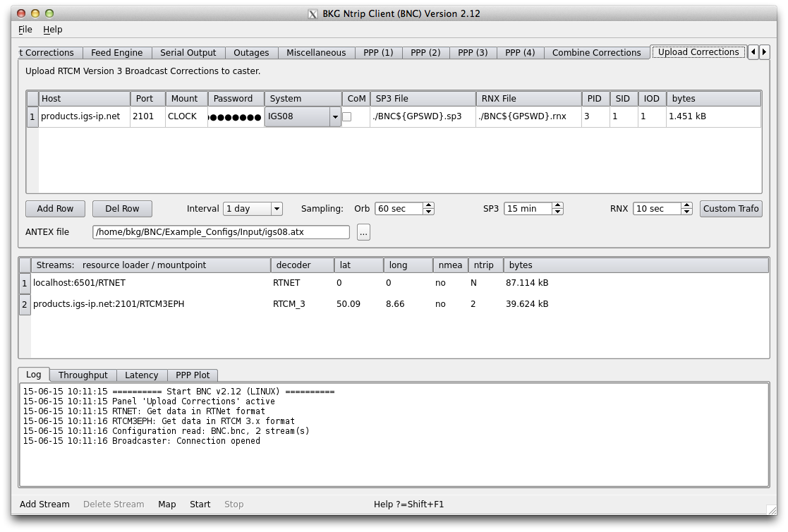
Figure 26: Producing Broadcast Corrections from incoming precise orbits and clocks and uploading them to an NTRIP Broadcaster.
BNC can upload a stream carrying Broadcast Ephemeris in RTCM Version 3 format to an NTRIP Broadcaster.
Specify the 'Host' IP name or number of an NTRIP Broadcaster to upload the stream. An empty option field means that you don't want to upload Broadcast Ephemeris.
Enter the NTRIP Broadcaster's IP 'Port' number for stream upload. Note that NTRIP Broadcasters are often configured to provide access on more than one port, usually port 80 and 2101. If you experience communication problems on port 80, you should try to use the alternative port(s).
3.16.2 Mountpoint & Password - mandatory if 'Host' is set
BNC uploads a stream to the NTRIP Broadcaster by referring to a dedicated mountpoint that has been set by its operator. Specify the mountpoint based on the details you received for your stream from the operator. It is often a four character ID (capital letters) plus an integer number.
The stream upload may be protected through an upload 'Password'. Enter the password you received from the NTRIP Broadcaster operator along with the mountpoint.
3.16.3 Sampling - mandatory if 'Host' is set

Figure 27: Producing a Broadcast Ephemeris stream from navigation messages of globally distributed RTCM streams and uploading them in RTCM Version 3 format to an NTRIP Broadcaster.
Each stream on an NTRIP Broadcaster (and consequently on BNC) is defined using a unique source ID called mountpoint. An NTRIP Client like BNC accesses the desired stream by referring to its mountpoint. Information about streams and their mountpoints is available through the source-table maintained by the NTRIP Broadcaster. Note that mountpoints could show up in BNC more than once when retrieving streams from several NTRIP Broadcasters.
Streams selected for retrieval are listed under the 'Streams' canvas on BNC's main window. The list provides the following information either extracted from source-table(s) produced by the NTRIP Broadcasters or introduced by BNC's user:
| 'resource loader' | NTRIP Broadcaster URL and port, or TCP/IP host and port, or UDP port, or Serial input port specification. |
| 'mountpoint' | Mountpoint introduced by NTRIP Broadcaster, or Mountpoint introduced by BNC's user. |
| 'decoder' | Name of decoder used to handle the incoming stream content according to its format; editable. |
| 'lat' | Approximate latitude of reference station, in degrees, north; editable if 'nmea' = 'yes'. |
| 'long' | Approximate longitude of reference station, in degrees, east; editable if 'nmea' = 'yes'. |
| 'nmea' | Indicates whether or not streaming needs to be initiated by BNC through sending NMEA-GGA message carrying position coordinates in 'lat' and 'long'. |
| 'ntrip' | Selected NTRIP transport protocol version (1, 2, 2s, R, or U), or 'N' for TCP/IP streams without NTRIP, or 'UN' for UDP streams without NTRIP, or 'S' for serial input streams without NTRIP. |
| 'bytes' | Number of bytes received. |
To remove a stream from the 'Streams' canvas in the main window, highlight it by clicking on it and hit the 'Delete Stream' button. You can also remove multiple streams simultaneously by highlighting them using +Shift and +Ctrl.
3.17.3 Reconfigure Stream Selection On-the-fly
The streams selection can be changed on-the-fly without interrupting uninvolved threads in the running BNC process.
Window mode: Hit 'Reread & Save Configuration' while BNC is in window mode and already processing data to let changes of your streams selection immediately become effective.
No window mode: When operating BNC online in 'no window' mode (command line option -nw), you force BNC to reread its 'mountPoints' configuration option from disk at pre-defined intervals. Select '1 min', '1 hour', or '1 day' as 'Reread configuration' option to reread the 'mountPoints' option every full minute, hour, or day. This lets a 'mountPoints' option edited in between in the configuration file become effective without terminating uninvolved threads. See annexed section 'Configuration Examples' for a configuration file example and a list of other on-the-fly changeable options.
A tabs section on the bottom of the main window provides online control of BNC's activities. Tabs are available to show the records saved in a logfile, for a plot to control the bandwidth consumption, for a plot showing stream latencies, and for time series plots of PPP results.
Records of BNC's activities are shown in the 'Log' tab. They can be saved into a file when a valid path is specified in the 'Logfile (full path)' field.
The bandwidth consumption per stream is shown in the 'Throughput' tab in bits per second (bps) or kilo bits per second (kbps). The following figure shows an example for the bandwidth consumption of incoming streams.
Figure 28: Bandwidth consumption of incoming streams.
The latency of observations in each incoming stream is shown in the 'Latency' tab in milliseconds or seconds. Streams not carrying observations (i.e. those providing only Broadcast Ephemeris messages) or having an outage are not considered here and shown in red color. Note that the calculation of correct latencies requires the clock of the host computer to be properly synchronized. The next figure shows an example for the latency of incoming streams.
Figure 29: Latency of incoming streams.
Precise Point Positioning time series of North (red), East (green) and Up (blue) coordinate components are shown in the 'PPP Plot' tab when a 'Origin' option is defined. Values are either referred to reference coordinates (if specified) or referred to the first estimated set of coordinate components. The time as given in format [hh:mm] refers to GPS Time. The sliding PPP time series window covers a period of 5 minutes. Note that it may take up to 30 seconds or more till the first PPP solutions becomes available. The following figure shows the screenshot of a PPP time series plot of North, East and Up coordinate components.
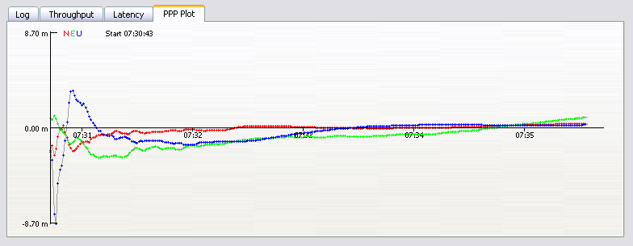
Figure 30: Time series plot of PPP session.
The bottom menu bar allows to add or delete streams to BNC's configuration and to start or stop it. It also provides access to BNC's online help function. The 'Add Stream' button opens a window that allows user to select one of several input communication links, see figure below.

Figure 31: Steam input communication links.
Button 'Add Stream' allows you to pull streams either from an NTRIP Broadcaster or from a TCP/IP port, a UPD port, or a serial port.
3.19.1.1 Add Stream - Coming from Caster
Button 'Add Stream' > 'Coming from Caster' then opens a window that allows user to select data streams from an NTRIP Broadcaster according to their mountpoints and show a distribution map of offered streams.
3.19.1.1.1 Caster Host and Port - mandatory
Enter the NTRIP Broadcaster host IP and port number. Note that EUREF and IGS operate NTRIP Broadcasters at http://www.euref-ip.net/home, http://www.igs-ip.net/home, http://www.products.igs-ip.net/home and http://mgex.igs-ip.net/home.
3.19.1.1.2 Casters Table - optional
It may be that you are not sure about your NTRIP Broadcasters host and port number or you are interested in other broadcaster installations operated elsewhere. Hit 'Show' for a table of known broadcasters maintained at www.rtcm-ntrip.org/home. A window opens which allows selecting a broadcaster for stream retrieval, see figure below.
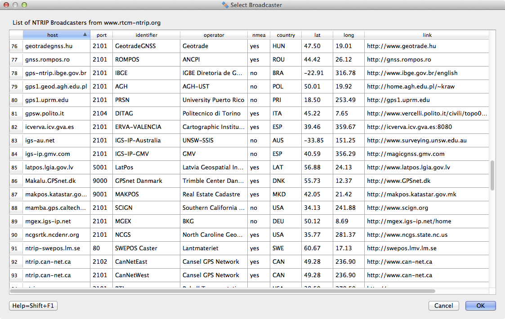
Figure 32: Casters table.
3.19.1.1.3 User and Password - mandatory for protected streams
Some streams on NTRIP Broadcasters may be restricted. Enter a valid 'User' ID and 'Password' for access to protected streams. Accounts are usually provided per NTRIP Broadcaster through a registration procedure. Register through http://igs.bkg.bund.de/ntrip/registeruser for access to protected streams from EUREF and IGS.
Use the 'Get Table' button to download the source-table from the NTRIP Broadcaster. Pay attention to data fields 'format' and 'format-details'. Keep in mind that BNC can only decode and convert streams that come in RTCM Version 2, RTCM Version 3, or RTNET format. For access to observations, Broadcast Ephemeris and Broadcast Corrections in RTCM format streams must contain a selection of appropriate message types as listed in the Annex, cf. data field 'format-details' for available message types and their repetition rates in brackets. Note that in order to produce RINEX Navigation files RTCM Version 3 streams containing message types 1019 (GPS) and 1020 (GLONASS) and 1043 (SBAS) and 1044 (QZSS) and 1045, 1046 (Galileo) and 63 (tentative, BDS/BeiDou) are required. Select your streams line by line, use +Shift and +Ctrl when necessary. The figure below provides an example source-table.
The contents of data field 'nmea' tells you whether a stream retrieval needs to be initiated by BNC through sending an NMEA-GGA message carrying approximate position coordinates (virtual reference station).
Hit 'OK' to return to the main window. If you wish you can click on 'Add Stream' and repeat the process again to retrieve streams from different casters.
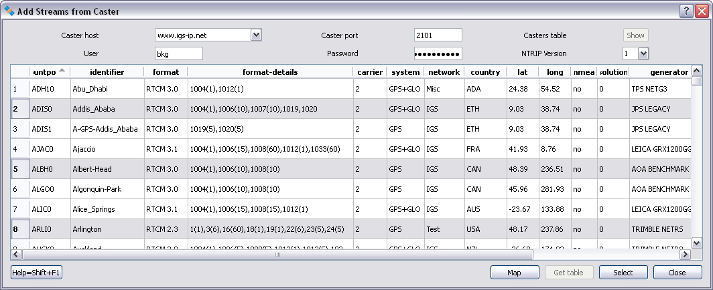
Figure 33: Broadcaster source-table.
3.19.1.1.5 NTRIP Version - mandatory
Some limitations and deficiencies of the NTRIP Version 1 stream transport protocol are solved in NTRIP Version 2. Improvements mainly concern a full HTTP compatibility in view of requirements coming from proxy servers. Version 2 is backwards compatible to Version 1. Options implemented in BNC are:
1: NTRIP Version 1, TCP/IP.
2: NTRIP Version 2 in TCP/IP mode.
2s: NTRIP Version 2 in TCP/IP mode via SSL.
R: NTRIP Version 2 in RTSP/RTP mode.
U: NTRIP Version 2 in UDP mode.
If NTRIP Version 2 is supported by the broadcaster:
Select option '1' if you are not sure whether the broadcaster supports NTRIP Version 2.
Button 'Map' opens a window to show a distribution map of the caster's streams. You may like to zoom in or out using the mouse. Left button: draw a rectangle to zoom, right button: zoom out, middle button: zoom back.
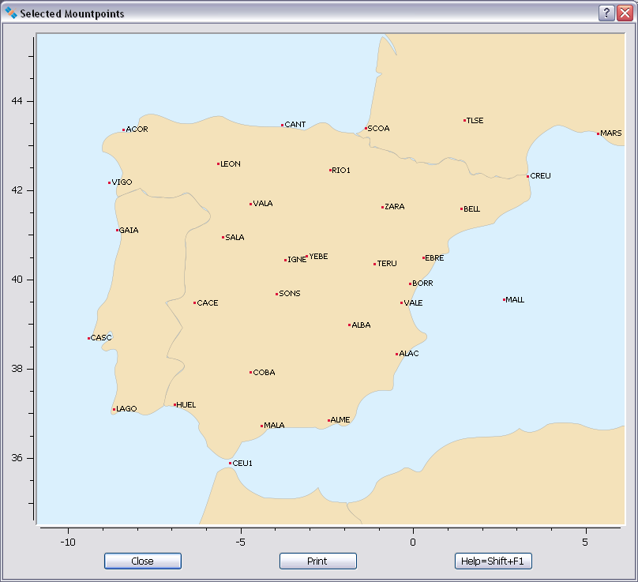
Figure 34: Stream distribution map derived from NTRIP Broadcaster source-table.
3.19.1.2 Add Stream - Coming from TCP/IP Port
Button 'Add Stream' > 'Coming from TCP/IP Port' allows to retrieve streams via TCP directly from an IP address without using the NTRIP transport protocol. For that you:
Streams directly received from a TCP/IP port show up with an 'N' for 'No NTRIP' in the 'Streams' canvas on BNC's main window. Latitude and longitude are to be entered just for informal reasons.
Note that this option works only if no proxy server is involved in the communication link.
3.19.1.3 Add Stream - Coming from UDP Port
Button 'Add Stream' > 'Coming from UDP Port' allows to pick up streams arriving directly at one of the local host's UDP ports without using the NTRIP transport protocol. For that you:
Streams directly received at a UDP port show up with a 'UN' for 'UDP, No NTRIP' in the 'Streams' canvas section on BNC's main window. Latitude and longitude are to be entered just for informal reasons.
3.19.1.4 Add Stream - Coming from Serial Port
Button 'Add Stream' > 'Coming from Serial Port' allows to retrieve streams from a GNSS receiver via serial port without using the NTRIP transport protocol. For that you:
Windows: COM1, COM2 Linux: /dev/ttyS0, /dev/ttyS1 FreeBSD: /dev/ttyd0, /dev/ttyd1 Digital Unix: /dev/tty01, /dev/tty02 HP-UX: /dev/tty1p0, /dev/tty2p0 SGI/IRIX: /dev/ttyf1, /dev/ttyf2 SunOS/Solaris: /dev/ttya, /dev/ttyb
When selecting one of the serial communication options listed above, make sure that you pick those configured to the serial connected GNSS receiver.
Streams received from a serial connected GNSS receiver show up with an 'S' (for Serial Port, no NTRIP) in the 'Streams' canvas section on BNC's main window. Latitude and longitude are to be entered just for informal reasons.
The following figure shows a BNC example setup for pulling a stream via serial port on a Linux operating system.

Figure 35: BNC setup for pulling a stream via serial port.
Button 'Delete Stream' allows you to delete streams previously selected for retrieval as listed under the 'Streams' canvas on BNC's main window.
Button 'Map' opens a window to show a distribution map of the streams selected for retrieval as listed under the 'Streams' canvas. You may like to zoom in or out using the mouse. Left button: draw a rectangle to zoom, right button: zoom out, middle button: zoom back.
Hit 'Start' to start retrieving, decoding or converting GNSS data streams in real-time. Note that 'Start' generally forces BNC to begin with fresh RINEX which might overwrite existing files when necessary unless the option 'Append files' is ticked.
Hit the 'Stop' button in order to stop BNC.
Command line options are available to run BNC in 'no window' mode or let it read data offline from one or several files for debugging or Post Processing purposes. BNC will then use processing options from the involved configuration file. Note that the self-explaining contents of the configuration file can easily be edited. It is possible to introduce a specific configuration file name instead of using the default name 'BNC.bnc'.
3.20.1 No Window Mode - optional
Apart from its regular windows mode, BNC can be started on all systems as a batch job with command line option '-nw'. BNC will then run in 'no window' mode, using processing options from its configuration file on disk. Terminate BNC using Windows Task Manager when running it in 'no window' mode on Windows systems.
Example:
bnc.exe -nw
It is obvious that BNC requires graphics support when started in interactive mode. But, note that it also requires graphics support when producing plots in batch mode (option -nw). Windows and Mac OS X systems always support graphics. For producing plots in batch mode on Linux systems you must make sure that at least a virtual X-Server such as 'Xvfb' is installed and the '-display' option is used. The following is an example shell script to execute BNC in batch mode for producing QC plots from RINEX files. It could be used via 'crontab':
#!/bin/bash # Save string localhost echo "localhost" > /home/user/hosts # Start virtual X-Server, save process ID /usr/bin/Xvfb :29 -auth /home/user/hosts -screen 0 1280x1024x8 & psID=`echo $!` # Run BNC application with defined display variable /home/user/BNC/bnc --conf /dev/null --key reqcAction Analyze --key reqcObsFile ons12090.12o --key reqcNavFile brdc2090.12p --key reqcOutLogFile multi.txt --key reqcPlotDir /home/user --display localhost:29 --nw # BNC done, kill X-server process kill $psID
Although BNC is primarily a real-time online tool, for debugging purposes it can be run offline to read data from a file previously saved through option 'Raw output file'. Enter the following command line option for that
--file <inputFileName>
and specify the full path to an input file containing previously saved data. Example:Note that when running BNC offline, it will use options for file saving, interval, sampling, PPP etc. from its configuration file.
Note further that option '--file' forces BNC to appy the '-nw' option for running in 'no window' mode.
3.20.3 Configuration File - optional
Example:
./bnc --conf MyConfig.bnc
This leads to a BNC job using configuration file 'MyConfig.bnc'. The configuration file will be saved in the current working directory.
3.20.4 Configuration Options - optional
BNC applies options from the configuration file but allows updating every one of them on the command line while the contents of the configuration file remains unchanged. The command line syntax for that looks as follows
--key <keyName> <keyValue>
where <keyName> stands for the name of an option contained in the configuration file and <keyValue> stands for the value you want to assign to it. The following is a syntax example for a complete command line:
bnc --nw --conf <confFileName> --key <keyName1> <keyValue1> --key <keyName2> <keyValue2> ...
Example:
./bnc --conf CONFIG.bnc --key proxyPort 8001 --key rnxIntr "1 day"
5.1. Revision History
5.2. RTCM
5.2.1 NTRIP Version 1
5.2.2 NTRIP Version 2
5.2.3 RTCM Version 2
5.2.4 RTCM Version 3
5.3. Configuration Examples
5.4. Further Reading
| Dec 2006 | Version 1.0b | [Add] First Beta Binaries published based on Qt 4.2.3. |
| Jan 2007 | Version 1.1b | [Add] Observables C2, S1, and S2 [Add] Virtual reference station access [Bug] RTCM2 decoder time tag fixed [Mod] Small letters for public RINEX skeleton files [Add] Online help through Shift+F1 |
| Apr 2007 | Version 1.2b | [Bug] Output only through IP port [Bug] Method 'reconnecting' now thread-save [Add] ZERO decoder added [Mod] Download public RINEX skeletons once per day [Mod] Upgrade to Qt Version 4.2.3 [Mod] Replace 'system' call for RINEX script by 'QProcess' [Add] HTTP Host directive for skeleton file download [Add] Percent encoding for user IDs and passwords [Bug] Exit execution of calling thread for RTCM3 streams [Bug] Signal-slot mechanism for threads |
| May 2007 | Version 1.3 | [Add] Source code published. |
| Jul 2007 | Version 1.4 | [Bug] Skip messages from proxy server [Bug] Call RINEX script through 'nohup' |
| Apr 2008 | Version 1.5 | [Add] Handle ephemeris from RTCM Version 3 streams [Add] Upgrade to Qt Version 4.3.2 [Add] Optional RINEX v3 output [Add] SBAS support [Bug] RINEX skeleton download following stream outage [Add] Handle ephemeris from RTIGS streams [Add] Monitor stream failure/recovery and latency [Mod] Redesign of main window [Bug] Freezing of About window on Mac OS X [Bug] Fixed problem with PRN 32 in RTCMv2 decoder [Bug] Fix for Trimble 4000SSI receivers in RTCMv2 decoder [Mod] Major revision of input buffer in RTCMv2 decoder |
| Dec 2008 | Version 1.6 | [Mod] Fill blank columns in RINEXv3 with 0.000 [Add] RTCMv3 decoder for orbit and clock corrections [Add] Check RTCMv3 streams for incoming message types [Add] Decode RTCMv2 message types 3, 20, 21, and 22 [Add] Loss of lock and lock time indicator [Bug] Rounding error in RTCMv3 decoder concerning GLONASS height [Mod] Accept GLONASS in RTCMv3 when transmitted first [Add] Leap second 1 January 2009 [Add] Offline mode, read data from file [Add] Output antenna descriptor, coordinates and eccentricities from RTCMv3 [Add] Reconfiguration on-the-fly [Mod] Binary output of synchronized observations [Add] Binary output of unsynchronized observations [Bug] Fixed problem with joined RTCMv3 blocks |
| Dec 2008 | Version 1.6.1 | [Mod] HTTP GET when no proxy in front |
| Nov 2009 | Version 1.7 | [Bug] RINEX Navigation file format [Add] Upgrade to Qt Version 4.5.2 [Add] Support of NTRIP v2 [Add] Rover support via serial port [Add] Show broadcaster table from www.rtcm-ntrip.org [Add] Enable/disable tab widgets [Add] User defined configuration file name [Mod] Switch to configuration files in ini-Format [Add] Daily logfile rotation [Add] Read from TCP/IP port, by-pass NTRIP transport protocol [Add] Save NMEA messages coming from rover [Add] Auto start [Add] Drag and drop ini files [Add] Read from serial port, by-pass NTRIP transport protocol [Mod] Update of SSR messages following RTCM 091-2009-SC104-542 [Add] Read from UPD port, by-pass NTRIP transport protocol [Mod] Output format of Broadcast Corrections [Add] Throughput plot [Add] Latency plot |
| Nov 2009 | Version 1.8 | [Mod] On-the-fly reconfiguration of latency and throughput plots |
| Feb 2010 | Version 2.0 | [Mod] Change sign of Broadcast Corrections [Add] Real-time PPP option |
| Jun 2010 | Version 2.1 | [Bug] SSR GLONASS message generation [Add] PPP in Post Processing mode [Mod] Update of SSR messages following draft dated 2010-04-12 [Mod] Generating error message when observation epoch is wrong |
| Jul 2010 | Version 2.2 | [Bug] GLONASS ephemeris time |
| Aug 2010 | Version 2.3 | [Mod] Internal format for saving raw streams [Bug] Outlier detection in GLONASS ambiguity resolution [Mod] Format of PPP logs in logfile [Bug] Complete acceleration terms for GLONASS ephemeris [Bug] Handling ephemeris IOD's in PPP mode |
| Dec 2010 | Version 2.4 | [Add] Output of averaged positions when in PPP mode [Mod] Use always the latest received set of Broadcast Ephemeris [Add] QuickStart PPP option [Mod] Improvement of data sharing efficiency among different threads [Mod] Design of PPP tab section [Add] Sigmas for observations and parameters [Add] Stream distribution map [Bug] GPS Ephemeris in RINEX v3 format |
| Feb 2011 | Version 2.5 | [Add] PPP option for sync of clock observations and corrections [Add] Drafted RTCMv3 Galileo ephemeris messages 1045 [Add] Drafted RTCMv3 Multiple Signal Messages [Add] Optional specification of sigmas for coordinates and troposphere in PPP [Add] Include Galileo in SPP [Add] Include Galileo observations in output via IP port [Add] Include Galileo observations in output via RINEXv3 files [Mod] Interface format for feeding a real-time engine with observations [Add] Correct observations for antenna phase center offsets [Add] Combine orbit/clock correction streams [Add] Specify corrections mountpoint in PPP tab |
| Apr 2011 | Version 2.6 | [Add] Complete integration of BNS in BNC [Add] SP3 and Clock RINEX output [Add] PPP in Post Processing Mode [Add] Some RINEX editing & QC functionality [Add] Threshold for orbit outliers in combination solution [Add] Real-time engine becomes orbit/clock server instead of client [Mod] 'EOE' added to orbit/clock stream from engine [Add] Correction for antenna eccentricities [Add] Quick start mode for PPP [Mod] Design of format for feeding engine changed to follow RINEX v3 [Mod] Implementation of SSR message encoding modified according to standard [Add] SSL/TLS Support of NTRIP Version 2 [Mod] Switch to Qt version 4.7.3 [Add] RINEX editing, concatenation and quality check [Add] Reading all configuration options from command line [Mod] RTCMv3 Galileo Broadcast Ephemeris message 1045 [Mod] Change default configuration file suffix from 'ini' to 'bnc' [Add] Specific rates for orbits and clocks in streams and SP3/RNX files |
| May 2012 | Version 2.6 | [Add] Version 2.6 published |
| Sep 2012 | Version 2.7 | [Bug] Bug in L5 decoding fixed [Bug] Bug in on-the-fly configuration fixed [Add] Clock RINEX file header extended [Add] Decoding/converting BeiDou and QZSS added [Add] Work on RINEX v2 and v3 quality check started [Mod] Source code completely re-arranged [Add] QWT and QWTPOLAR graphics libraries added [Add] RINEX QC through multipath analysis sky plot [Add] RINEX QC through signal-to-noise ratio sky plot [Add] RINEX QC through satellite availability plot [Add] RINEX QC through satellite elevation plot [Add RINEX QC through PDOP plot [Bug] Short periodic outages in PPP time series when 'Sync Corr' set to zero |Add] Log observation types contained in RTCM Version 3 MSM streams [Add] Reading RINEX v3 observation type header records from RINEX skeleton files [Add] Logfile for RINEX file editing and concatenation [Add] Save PNG plot files on disk [Mod] Plot stream distribution map from NTRIP Broadcaster source-table [Add] Plot stream distribution map from selected sources [Add] Version 2.7 published |
| Mar 2013 | Version 2.8 | [Mod] Started work on new version in Sep 2012 [Bug] Epoch special event flag in RINEX concatenation [Bug] Limit RINEX v2 records length to 80 characters [Bug] SSR message update interval indicator [Bug] Fixed SSR stream encoding and upload [Add] Concatenate RINEX v3 navigation files containing Galileo ephemeris [Mod] Plausibility check of GLONASS ephemeris [Add] Correcting clocks for scale factor involved in transformation [Mod] Orbit/clock interpolation in SSR stream encoding and upload to caster [Add] Version 2.8 published |
| Jul 2013 | Version 2.9 | [Add] Started work on new version in Mar 2013 [Bug] SSR stream upload buffering disabled [Mod] Format for feeding a connected GNSS engine [Mod] RTNET format for receiving data from a connected GNSS engine [Add] Include Galileo in SPP [Add] RINEX QC multipath an SNR sky plots for GLONASS and Galileo [Add] Bias estimation for GLONASS clocks in PPP [Add] Trace positions on GM or OSM maps [Add] Version 2.9 published |
| Dec 2013 | Version 2.10 | [Add] Started work on new version in Aug 2013 [Bug] Clock RINEX und SP3 file generation on Windows systems [Bug] Broadcast Ephemeris generation [Add] Transformation ITRF2008 to NAD83 and DREF91 [Add] CodeBias added to RTNET stream format [Bug] GPS L2 in 'Feed Engine' output [Mod] Made C1 in BeiDou default observation type instead of C2 [Add] Feed engine output sorted per stream [Add] Feed engine output file name change on-the-fly [Add] 'Append files' option for RINEX observation files [Mod] Broadcast Corrections ASCII file output for message 1058 & 1064 modified [Bug] GPS L2 phase data in RINEX2 [Bug] GLONASS frequency numbers [Add] RTCMv3 Galileo Broadcast Ephemeris message 1046 [Add] Reset ambiguities in PPP when orbit/clock correction IDs change [Add] Satellite clock offsets are reset in adjustment for combination when orbit/clock correction IDs change [Add] Version 2.10 published |
| Sep 2014 | Version 2.11 | [Add] Started work on new version in Dec 2013 [Mod] SIRGAS transformation parameters adjusted [Mod] Antex file updated [Mod] RTCM SSR messages updated [Bug] GLONASS code biases [Mod] Maximum number of GNSS observations increased [Mod] Loss of lock handling changed [Add] Raw stream output through TCP/IP port [Add] Version 2.11.0 published |
| Sep 2014 | Version 2.12 |
[Add] Started work on new version in Sep 2014 [Mod] RINEX file concatenation [Add] Observation code selection in RINEX file editing [Mod] Routine handling of data input and output in RINEX format re-written [Mod] QC routines re-written with the goal of handling all signal types [Add] Machine-readable output of RINEX QC [Add] Additionl PPP client for parallel processing of an arbitrary number of stations in separate threads [Add] PPP processing of any number of linear combinations of GNSS measurements selected by user [Add] Decoding RTCM SSR phase bias messages [Add] Decoding RTCM SSR ionospheric model messages, single-layer model for total electron content [Add] RTCMv3 QZSS Broadcast Ephemeris message 1044 [Add] Handle old-fashioned SNR values in RINEX [Mod] SNR and MP visualization depending on RINEX observation attribute [Bug] Saastamoinen tropospheric correction for very high elevation receivers [Add] Comparison of SP3 files [Add] RTCMv3 SBAS Broadcast Ephemeris message 1043 [Add] RTCMv3 BeiDou Broadcast Ephemeris message 63, tentative [Bug] VRS support in sending NMEA in Auto/Manual mode to NTRIP Broadcaster [Add] Forwarding NMEA GNGGA to NTRIP Broadcaster [Bug] Stream failure/recovery reports |
The Radio Technical Commission for Maritime Services (RTCM) is an international non-profit scientific, professional and educational organization. Special Committees provide a forum in which governmental and non-governmental members work together to develop technical standards and consensus recommendations in regard to issues of particular concern. RTCM is engaged in the development of international standards for maritime radionavigation and radiocommunication systems. The output documents and reports prepared by RTCM Committees are published as RTCM Recommended Standards. Topics concerning Differential Global Navigation Satellite Systems (DGNSS) are handled by the Special Committee SC 104.
Personal copies of RTCM Recommended Standards can be ordered through http://www.rtcm.org/orderinfo.php.
'Networked Transport of RTCM via Internet Protocol' Version 1.0 (NTRIP) stands for an application-level protocol streaming Global Navigation Satellite System (GNSS) data over the Internet. NTRIP is a generic, stateless protocol based on the Hypertext Transfer Protocol HTTP/1.1. The HTTP objects are enhanced to GNSS data streams.
NTRIP Version 1 is an RTCM standard designed for disseminating differential correction data (e.g. in the RTCM-104 format) or other kinds of GNSS streaming data to stationary or mobile users over the Internet, allowing simultaneous PC, Laptop, PDA, or receiver connections to a broadcasting host. NTRIP supports wireless Internet access through Mobile IP Networks like GSM, GPRS, EDGE, or UMTS.
NTRIP is implemented in three system software components: NTRIP Clients, NTRIP Servers and NTRIP Broadcasters. The NTRIP Broadcaster is the actual HTTP server program whereas NTRIP Client and NTRIP Server are acting as HTTP clients.
NTRIP is an open none-proprietary protocol. Major characteristics of NTRIP's dissemination technique are:
The NTRIP Broadcaster maintains a source-table containing information on available NTRIP streams, networks of NTRIP streams and NTRIP Broadcasters. The source-table is sent to an NTRIP Client on request. Source-table records are dedicated to one of the following: Data Streams (record type STR), Casters (record type CAS), or Networks of streams (record type NET).
Source-table records of type STR contain the following data fields: 'mountpoint', 'identifier', 'format', 'format-details', 'carrier', 'nav-system', 'network', 'country', 'latitude', 'longitude', 'nmea', 'solution', 'generator', 'compr-encryp', 'authentication', 'fee', 'bitrate', 'misc'.
Source-table records of type NET contain the following data fields: 'identifiey', 'operator', 'authentication', 'fee', 'web-net', 'web-str', 'web-reg', 'misc'.
Source-table records of type CAS contain the following data fields: 'host', 'port', 'identifier', 'operator', 'nmea', 'country', 'latitude', 'longitude', 'misc'.
The major changes of NTRIP Version 2 compared to Version 1.0 are:
NTRIP Version 2 allows to either communicating in TCP/IP mode or in RTSP/RTP mode or in UDP mode whereas Version 1 is limited to TCP/IP only. It furthermore allows using the Transport Layer Security (TLS) and its predecessor, Secure Sockets Layer (SSL) cryptographic protocols for secure NTRIP communication over the Internet.
Transmitting GNSS carrier phase data can be done through RTCM Version 2 messages. Please note that only RTCM Version 2.2 and 2.3 streams may include GLONASS data. Messages that may be of interest here are:
RTCM Version 3 has been developed as a more efficient alternative to RTCM Version 2. Service providers and vendors have asked for a standard that would be more efficient, easy to use, and more easily adaptable to new situations. The main complaint was that the Version 2 parity scheme was wasteful of bandwidth. Another complaint was that the parity is not independent from word to word. Still another was that even with so many bits devoted to parity, the actual integrity of the message was not as high as it should be. Plus, 30-bit words are awkward to handle. The Version 3 standard is intended to correct these weaknesses.
RTCM Version 3 defines a number of message types. Messages that may be of interest here are:
The following are so-called 'State Space Representation' (SSR) messages:
The following are so-called 'Multiple Signal Messages' (MSM):
The following are proposed 'Multiple Signal Messages' (MSM) under discussion for standardization:
BNC comes with a number of configuration examples which can be used on all operating systems. Copy the complete directory 'Example_Configs' which comes with the software including sub-directories 'Input' and 'Output' to your disc. There are two ways to start BNC using one of the example configurations:
Although it's not a must, we suggest that you always create BNC configuration files with the file name extension '.bnc'.
We furthermore suggest for convenience reasons that you configure your system to automatically start BNC when you double-click a file with the file name extension '.bnc'. The following describes what to do on Windows systems to associate the BNC program to such configuration files:
Some of the presented example configuration files contain a user ID 'Example' with a password 'Configs' for accessing a few GNSS streams from public Ntrip Broadcasters. This generic account is arranged for convenience reasons only. Please be so kind as to replace the generic account details as well as the place holders 'User' and 'Pass' by the personal user ID and password you receive following an online registration through http://register.rtcm-ntrip.org.
Note that the account for an Ntrip Broadcaster is usually limited to pulling a specified maximum number of streams at the same time. As running some of the example configurations requires pulling several streams, it is suggested to make sure that you don't exceed your account's limits.
Make also sure that sub-directories 'Input' and 'Output' which are part of the example configurations exist on your system or adjust the affected example configuration options according to your needs.
Some BNC options require antenna phase center variations as made available from IGS through so-called ANTEX files at ftp://igs.org/pub/station/general. An example ANTEX file 'igs08.atx' is part of the BNC package for convenience.
The example configurations assume that no proxy protects your BNC host. Should a proxy be operated in front of BNC then you need to introduce its IP and port in the 'Network' tab.
You should be able to run all configuration examples without changing their options. However, configurations 'Upload.bnc' and 'UploadPPP.bnc' are exceptions because they require an input stream from a connected network engine.
The following table's left column is a list of options as contained in BNC's configuration files (default: BNC.bnc).
| Option | Affiliation |
| [General] | Settings: Group |
| startTab= | Internal: Top tab index |
| statusTab= | Internal: Bottom tab index |
| font= | Internal: Used font |
| casterUrlList= | Internal: Visited URLs |
| mountPoints= | Add Streams: broadcaster:port/mountpoint |
| ntripVersion= | Add Stream: NTRIP Version |
| proxyHost= | Network: Proxy host |
| proxyPort= | Network: Proxy port |
| sslCaCertPath= | Network: Path to SSL certificates |
| ignoreSslErrors= | Network: Ignore ssl authorization errors |
| logFile= | General: Logfile (full path) |
| rnxAppend= | General: Append files |
| onTheFlyInterval= | General: Reread configuration |
| autoStart= | General: Auto start |
| rawOutFile= | General: Raw output file (full path) |
| rnxPath= | RINEX Observations: Directory |
| rnxIntr= | RINEX Observations: Interval |
| rnxSample= | RINEX Observations: Sampling |
| rnxSkel= | RINEX Observations: Skeleton extension |
| rnxScript= | RINEX Observations: Uplod script |
| rnxV3= | RINEX Observation: Version 3 |
| ephPath= | RINEX Ephemeris: Directory |
| ephIntr= | RINEX Ephemeris: Interval |
| outEphPort= | RINEX Ephemeris: Port |
| ephV3= | RINEX Ephemeris: Version 3 |
| corrPath= | Broadcast Corrections: Directory, ASCII |
| corrIntr= | Broadcast Corrections: Interval |
| corrPort= | Broadcast Corrections: Port |
| corrTime= | Broadcast Corrections: Wait for full corr epoch |
| outPort= | Feed Engine: Port |
| waitTime= | Feed Engine: Wait for full obs epoch |
| binSampl= | Feed Engine: Sampling |
| outFile= | Feed Engine: File (full path) |
| outUPort= | Feed Engine: Port (unsynchronized) |
| serialMountPoint= | Serial Output: Mountpoint |
| serialPortName= | Serial Output: Port name |
| serialBaudRate= | Serial Output: Baud rate |
| serialFlowControl= | Serial Output: Flow control |
| serialDataBits= | Serial Output: Data bits |
| serialParity= | Serial Output: Parity |
| serialStopBits= | Serial Output: Stop bits |
| serialAutoNMEA= | Serial Output: NMEA |
| serialFileNMEA= | Serial Output: NMEA file name |
| serialHeightNMEA= | Serial Output: Height |
| obsRate= | Outages: Observation rate |
| adviseFail= | Outages: Failure threshold |
| adviseReco= | Outages: Recovery threshold |
| adviseScript= | Outages: Script (full path) |
| miscMount= | Miscellaneous: Mountpoint |
| perfIntr= | Miscellaneous: Log latency |
| scanRTCM= | Miscellaneous: Scan RTCM |
| pppSPP= | PPP Client: PPP/SPP |
| pppMount= | PPP Client: Observations Mountpoint |
| pppCorrMount= | PPP Client: Corrections Mountpoint |
| pppRefCrdX= | PPP Client: X coordinate of plot origin |
| pppRefCrdY= | PPP Client: Y coordinate of plot origin |
| pppRefCrdZ= | PPP Client: Z coordinate of plot origin |
| pppRefdN= | PPP Client: North eccentricity |
| pppRefdE= | PPP Client: East eccentricity |
| pppRefdU= | PPP Client: Up eccentricity |
| nmeaFile= | PPP Client: NMEA outputfile |
| nmeaPort= | PPP Client: NMEA IP output port |
| pppPlotCoordinates= | PPP Client: Plot NEU time series |
| postObsFile= | PPP Client: Observations file |
| postNavFile= | PPP Client: Navigation file |
| postCorrFile= | PPP Client: Corrections file |
| postOutFile= | PPP Client: Output file |
| pppAntenna= | PPP Client: Antenna name |
| pppAntex= | PPP Client: Path to ANTEX file |
| pppUsePhase= | PPP Client: Use phase data |
| pppEstTropo= | PPP Client: Estimate troposphere |
| pppGLONASS= | PPP Client: Use GLONASS |
| pppGalileo= | PPP Client: Use Galileo |
| pppSync= | PPP Client: Sync observations and corrections |
| pppAverage= | PPP Client: Lenght of time window for moving average |
| pppQuickStart= | PPP Client: Quick-Start period |
| pppMaxSolGap= | PPP Client: Maximal Solution Gap |
| pppSigmaCode= | PPP Client: Sigma for Code observations |
| pppSigmaPhase= | PPP Client: Sigma for Phase observations |
| pppSigmaCrd0= | PPP Client: Sigma for initial XYZ coordinate |
| pppSigmaCrdP= | PPP Client: White noise for XYZ |
| pppSigmaTrp0= | PPP Client: Sigma for initial tropospheric delay |
| pppSigmaTrpP= | PPP Client: White noise for tropospheric delay |
| pppAudioResponse= | PPP Client: Threshold for audio response |
| mapSpeed= | PPP Client: Offline processing speed for mapping |
| mapWinDotColor= | PPP Client: Color of dots and cross hair on map |
| mapWinDotSize= | PPP Client: Size of dots on map |
| useOsmMap= | PPP Client: Select Google maps or OSM |
| reqcAction= | Reqc: Action |
| reqcComment= | Reqc: Additional comments |
| reqcEndDateTime= | Reqc: Stop time |
| reqcNavFile= | Reqc: Navigation file |
| reqcNewAntennaName= | Reqc: New antenna |
| reqcNewMarkerName= | Reqc: New marker |
| reqcNewReceiverName= | Reqc: New receiver |
| reqcObsFile= | Reqc: Observations file |
| reqcOldAntennaName= | Reqc: Old antenna |
| reqcOldMarkerName= | Reqc: Old marker |
| reqcOldReceiverName= | Reqc: Old receiver |
| reqcOutLogFile= | Reqc: Output logfile |
| reqcOutNavFile= | Reqc: Output navigation file |
| reqcOutObsFile= | Reqc: Output observations file |
| reqcPlotDir | Reqc: QC plots directory |
| reqcRnxVersion= | Reqc: RINEX version |
| reqcRunBy= | Reqc: Operators name |
| reqcSampling= | Reqc: RINEX sampling |
| reqcSkyPlotSystem= | Reqc: GNSS system specification |
| reqcStartDateTime= | Reqc: Start time |
| combineStreams= | Combination: List of correction streams |
| cmbMethod=Filter | Combination: Approach |
| cmbMaxres= | Combination: Clock outlier threshold |
| cmbSampl= | Combination: Orbit and clock sampling |
| uploadIntr= | Upload Corrections: File interval |
| uploadMountpointsOut= | Upload Corrections: Upload streams |
| uploadSamplClkRnx= | Upload Corrections: Clock sampling |
| uploadSamplSp3= | Upload Corrections: Orbit sampling |
| uploadSamplRtcmEphCorr= | Upload Corrections: Orbit sampling |
| trafo_dx= | Upload Corrections: Translation X |
| trafo_dy= | Upload Corrections: Translation Y |
| trafo_dz= | Upload Corrections: Translation Z |
| trafo_dxr= | Upload Corrections: Translation change X |
| trafo_dyr= | Upload Corrections: Translation change Y |
| trafo_dzr= | Upload Corrections: Translation change Z |
| trafo_ox= | Upload Corrections: Rotation X |
| trafo_oy= | Upload Corrections: Rotation Y |
| trafo_oz= | Upload Corrections: Rotation Z |
| trafo_oxr= | Upload Corrections: Rotation change X |
| trafo_oyr= | Upload Corrections: Rotation change Y |
| trafo_ozr= | Upload Corrections: Rotation change Z |
| trafo_sc= | Upload Corrections: Scale |
| trafo_scr= | Upload Corrections: Scale change |
| trafo_t0= | Upload Corrections: Reference year |
| uploadEphHost= | Upload Ephemeris: Host |
| uploadEphPort= | Upload Ephemeris: Port |
| uploadEphMountpoint= | Upload Ephemeris: Moutpoint |
| uploadEphPassword= | Upload Ephemeris: Password |
| uploadEphSample= | Upload Ephemeris: Sampling |
Note that the following configuration options saved on disk can be changed/edited on-the-fly while BNC is already processing data:
| Links | |
| NTRIP | http://igs.bkg.bund.de/ntrip/index |
| EUREF-IP NTRIP Broadcaster | http://www.euref-ip.net/home |
| IGS-IP NTRIP Broadcaster | http://www.igs-ip.net/home |
| IGS products NTRIP Broadcaster | http://products.igs-ip.net/home |
| IGS M-GEX NTRIP Broadcaster | http://mgex.igs-ip.net/home |
| IGS Central Bureau NTRIP Broadcaster | http://rt.igs.org |
| IGS Real-time Service | http://rts.igs.org |
| Distribution of IGS-IP streams | http://www.igs.oma.be/real_time/ |
| Completeness and latency of IGS-IP data | http://www.igs.oma.be/highrate/ |
| NTRIP Broadcaster overview | http://www.rtcm-ntrip.org/home |
| NTRIP Open Source software code | http://software.rtcm-ntrip.org |
| EUREF-IP Project | http://www.epncb.oma.be/euref_IP |
| Real-time IGS Pilot Project | http://www.rtigs.net/pilot |
| Radio Technical Commission for Maritime Services | http://www.rtcm.org |
| Publications | |
| Louis H. Estey and Charles M. Meertens | TEQC: The Multi-Purpose Toolkit for GPS/GLONASS Data, GPS Solutions, Vol. 3, No. 1, pp. 42-49, 1999. |
| Weber, G., D. Dettmering, H. Gebhard and R. Kalafus | Networked Transport of RTCM via Internet Protocol (Ntrip), IP-Streaming for Real-Time GNSS Applications, ION GNSS 2005. |
| Weber, G, L. Mervart, Z. Lukes, C. Rocken and J. Dousa | Real-time Clock and Orbit Corrections for Improved Point Positioning via NTRIP, ION GNSS 2007. |
| Mervart, L., Z. Lukes, C. Rocken and T. Iwabuchi | Precise Point Positioning With Ambiguity Resolution in Real-Time, ION GNSS 2008. |
| Weber, G. and L. Mervart | The BKG Ntrip Client (BNC), Report on EUREF Symposium 2007 in London, Mitteilungen des Bundesamtes fuer Kartographie und Geodaesie, Band 42, Frankfurt, 2009. |
| Weber, G. and L. Mervart | Real-time Combination of GNSS Orbit and Clock Correction Streams Using a Kalman Filter Approach, ION GNSS 2010. |
| Huisman, L., P. Teunissen and C. Hu | GNSS Precise Point Positioning in Regional Reference Frames Using Real-time Broadcast Corrections, Journal of Applied Geodesy, Vol. 6, pp15-23, 2012. |